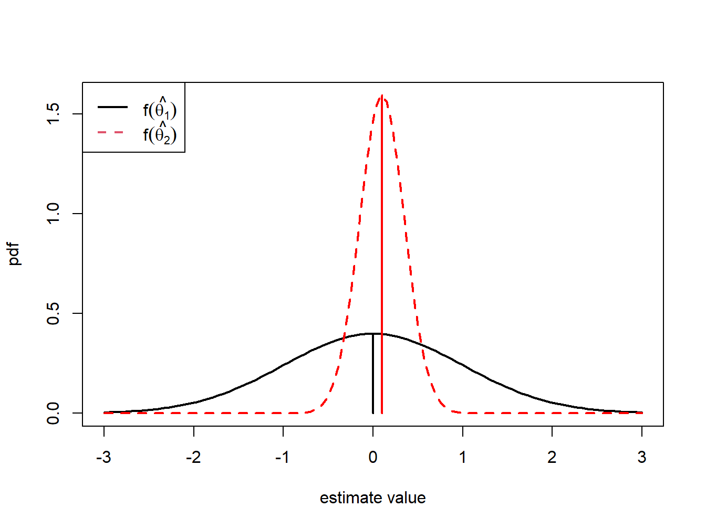
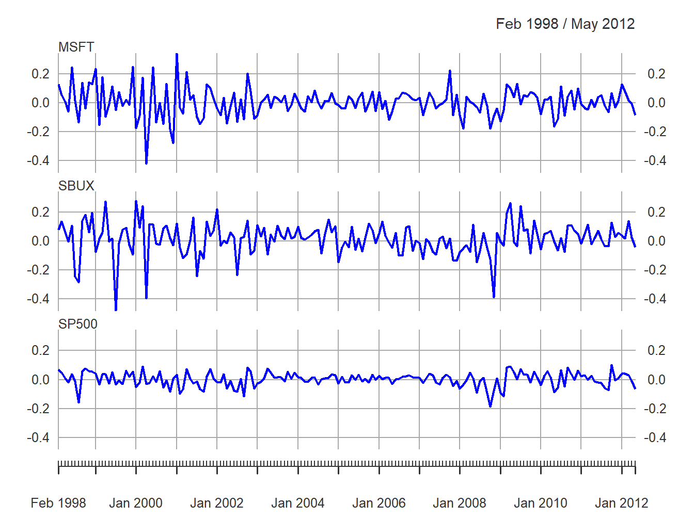
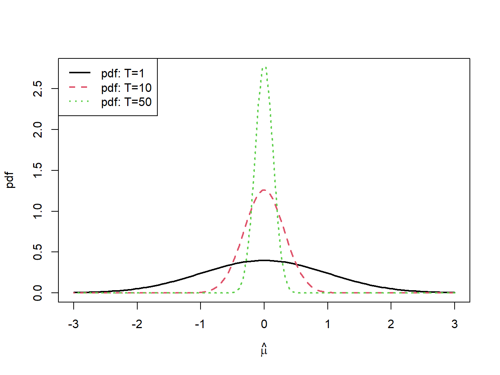
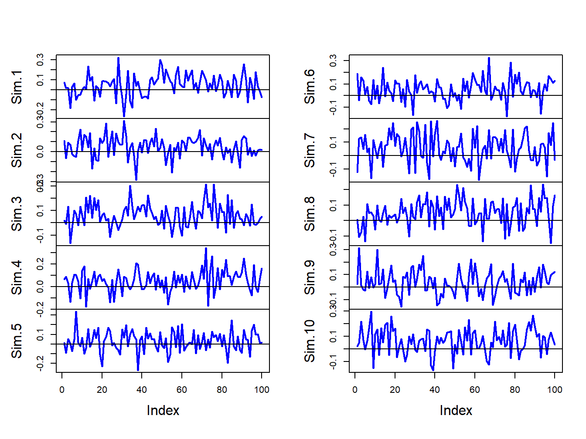
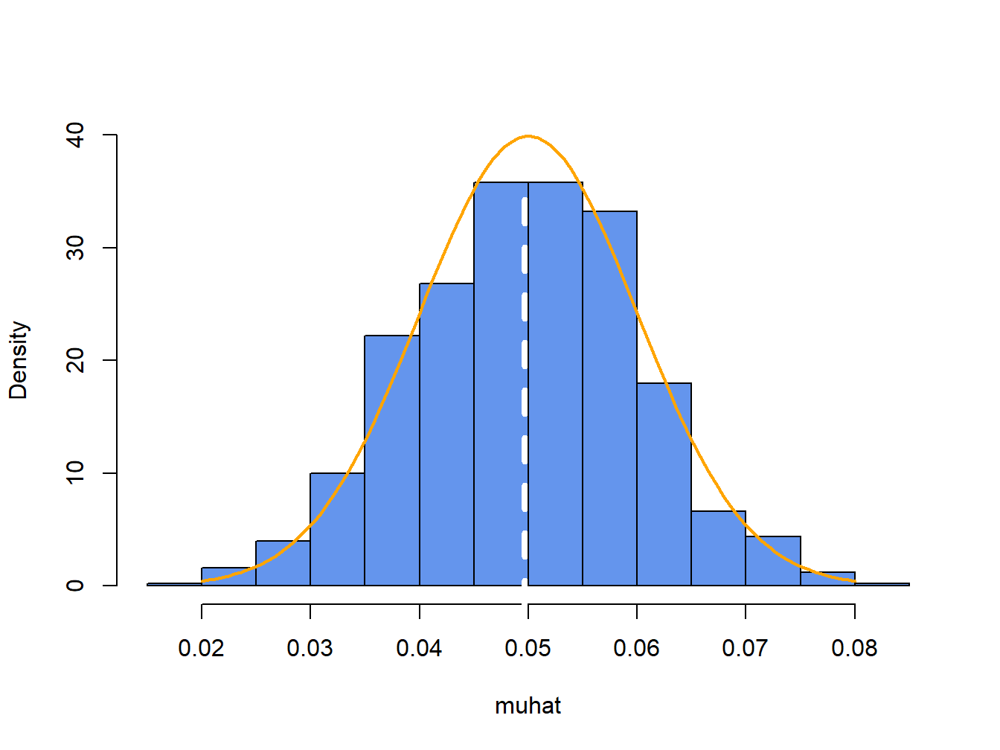
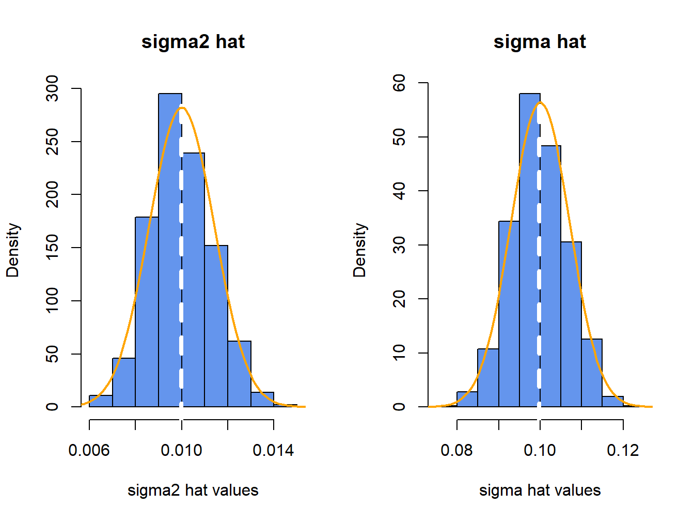
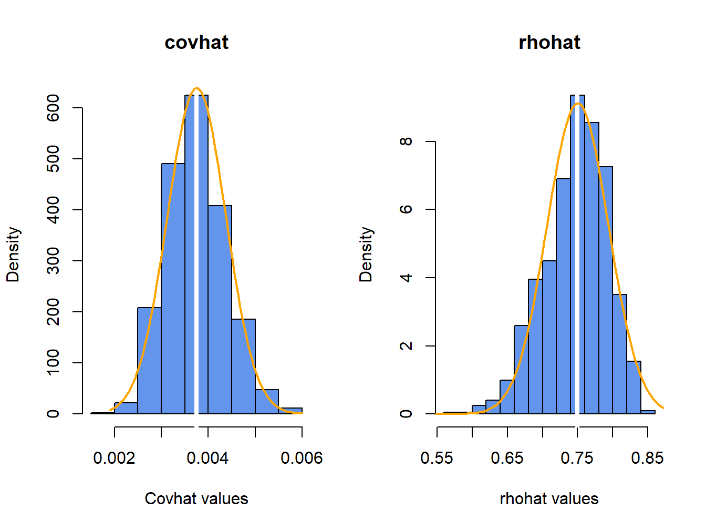

7 Estimation of The GWN Model
Updated: September 5, 2026
Copyright © Eric Zivot 2026
The GWN model of asset returns presented in the previous chapter gives you a simple framework for interpreting the time series behavior of asset returns and prices. At the beginning of time \(t-1\), \(\mathbf{R}_{t}\) is an \(N\times1\) random vector representing the returns (simple or continuously compounded) on assets \(i=1,\ldots,N\) to be realized at time \(t\). The GWN model states that \(\mathbf{R}_{t}\sim iid~N(\boldsymbol{\mu},\boldsymbol{\Sigma})\). Your best guess for the return at \(t\) on asset \(i\) is \(E[R_{it}]=\mu_{i}\), your measure of uncertainty about our best guess is captured by \(\mathrm{sd}(R_{it})=\sigma_{i}\), and your measures of the direction and strength of linear association between \(R_{it}\) and \(R_{jt}\) are \(\sigma_{ij}=\mathrm{cov}(R_{it},R_{jt})\) and \(\rho_{ij}=\mathrm{cor}(R_{it},R_{jt})\), respectively. The GWN model assumes that the economic environment is constant over time (i.e., covariance stationary) so that the multivariate normal distribution characterizing returns is the same for all time periods \(t\).
Your life would be very easy if you knew the exact values of \(\mu_{i},\sigma_{i}^{2}\), \(\sigma_{ij}\) and \(\rho_{ij}\): the parameters of the GWN model. Then you could use the GWN model for risk and portfolio analysis. In actuality, however, you do not know these values with certainty. Therefore, a key task in financial econometrics is estimating these values from a history of observed return data. Given estimates of the GWN model parameters you can then apply the model to risk and portfolio analysis.
Suppose you observe returns on \(N\) different assets over the sample \(t=1,\ldots,T\). Denote this sample \(\{\mathbf{r}_{1},\ldots,\mathbf{r}_{T}\}=\{\mathbf{r}_{t}\}_{t=1}^{T}\), where \(\mathbf{r}_{t}=({r}_{1t},\ldots,r_{Nt})^{\prime}\) is the \(N\times1\) vector of returns on \(N\) assets observed at time \(t\). It is assumed that the observed returns are realizations of the random variables \(\{\mathbf{R}_{t}\}_{t=1}^{T}\), where \(\mathbf{R}_{t}=(R_{1t},\ldots,R_{Nt})^{\prime}\) is a vector of \(N\) asset returns described by the GWN model:
\[ \mathbf{R}_{t}=\boldsymbol{\mu}+\boldsymbol{\varepsilon}_{t},~\boldsymbol{\varepsilon}_{t}\sim \mathrm{GWN}(\mathbf{0},\boldsymbol{\Sigma}). \tag{7.1}\]
Under these assumptions, you can use the observed returns \(\{\mathbf{r}_{t}\}_{t=1}^{T}\) to estimate the unknown parameters in \(\boldsymbol{\mu}\) and \(\boldsymbol{\Sigma}\) of the GWN model. However, before you describe the estimation of the GWN model in detail, it is necessary to review some fundamental concepts in the statistical theory of estimation. This is important because estimates of parameters have estimation error and statistical theory allows you to evaluate characteristics of estimation error and to develop quantitative measures of the typical magnitude of estimation error. As you shall see, some parameters of the GWN model are precisely estimated (have small estimation error) and some parameters are not (have large estimation error).
The chapter is outlined as follows. In Section 7.1 I review some of the statistical theory of estimation and discusses some important finite sample properties of estimators such as bias and precision. For many estimators it is difficult to derive exact finite sample properties which motivates the need to look at asymptotic properties of estimators. These are properties that hold exactly as the sample size goes to infinity but are used as approximations for a finite sample size. I present estimators of the GWN model parameters in Section 7.4 and I investigate the statistical properties of these estimators in Section 7.5. In Section 7.6 I illustrates how Monte Carlo simulation can be used to evaluate and understand the statistical properties of the GWN model estimators.
To be added:
- Which asymptotic distribution formulas depend on the normality assumption? Make clear which results depend on GWN model and which results do not.
In this chapter I use the R packages introcompfinr, mvtnorm, and PerformanceAnalytics. Make sure these packages are installed and loaded prior to running the R examples in the chapter.
7.1 Estimators and Estimates
Let \(R_{t}\) be the return on a single asset (simple or continuously compounded) described by the GWN model and let \(\theta\) denote some characteristic (parameter) of the GWN model you are interested in estimating. For simplicity, assume that \(\theta\in\mathbb{R}\) is a single parameter. For example, if you are interested in the expected return on the asset, then \(\theta=\mu\); if you are interested in the variance of the asset returns, then \(\theta=\sigma^{2}\); if you are interested in the first lag autocorrelation of returns then \(\theta=\rho_{1}\). The goal is to estimate \(\theta\) based on a sample of size \(T\) of the observed data when you believe the data is generated from the GWN return model.
Definition 7.1 (Estimator) Let \(\{R_{1},\ldots,R_{T}\}\) denote a collection of \(T\) random returns from the GWN model, and let \(\theta\) denote some characteristic of the model. An estimator of \(\theta\), denoted \(\hat{\theta}\), is a rule or algorithm for estimating \(\theta\) as a function of the random variables \(\{R_{1},\ldots,R_{T}\}\). Here, \(\hat{\theta}\) is a random variable.
Definition 7.2 (Estimate) Let \(\{r_{1},\ldots,r_{T}\}\) denote an observed sample of size \(T\) from the GWN model, and let \(\theta\) denote some characteristic of the model. An estimate of \(\theta\), denoted \(\hat{\theta}\), is simply the value of the estimator for \(\theta\) based on the observed sample \(\{r_{1},\ldots,r_{T}\}\). Here, \(\hat{\theta}\) is a number.
Example 7.1 (The sample average as an estimator and an estimate) Let \(R_{t}\) be the return on a single asset described by the GWN model, and suppose you are interested in estimating \(\theta=\mu=E[R_{t}]\) from the sample of observed returns \(\{r_{t}\}_{t=1}^{T}\). The sample average is an algorithm for computing an estimate of the expected return \(\mu\). Before the sample is observed, you can think of \(\hat{\mu}=\frac{1}{T}\sum_{t=1}^{T}R_{t}\) as a simple linear function of the random variables \(\{R_{t}\}_{t=1}^{T}\) and so is itself a random variable. You can study the properties of \(\hat{\mu}\) using the tools of probability theory presented in chapter 2.
After the sample is observed, the sample average can be evaluated using the observed data \(\{r_{t}\}_{t=1}^{T}\) giving \(\hat{\mu}=\frac{1}{T}\sum_{t=1}^{T}r_{t}\), which produces the numerical estimate of \(\mu\). For example, suppose \(T=5\) and the realized values of the returns are \(r_{1}=0.1,r_{2}=0.05,r_{3}=0.025,r_{4}=-0.1,r_{5}=-0.05\). Then the estimate of \(\mu\) using the sample average is: \[ \hat{\mu}=\frac{1}{5}(0.1+0.05+0.025+-0.1+-0.05)=0.005. \] \(\blacksquare\)
The example above illustrates the distinction between an estimator and an estimate of a parameter \(\theta\). However, typically in the statistics literature you use the same symbol, \(\hat{\theta}\), to denote both an estimator and an estimate. When \(\hat{\theta}\) is treated as a function of the random returns it denotes an estimator and is a random variable. When \(\hat{\theta}\) is evaluated using the observed data it denotes an estimate and is simply a number. The context in which you discuss \(\hat{\theta}\) will determine how to interpret it.
7.2 Finite Sample Properties of Estimators
Consider \(\hat{\theta}\) as a random variable. In general, the pdf of \(\hat{\theta}\), \(f(\hat{\theta})\), depends on the pdf’s of the random variables \(\{R_{t}\}_{t=1}^{T}\). The exact form of \(f(\hat{\theta})\) may be very complicated. Sometimes you can use analytic calculations to determine the exact form of \(f(\hat{\theta})\). This can be done, for example, when \(\hat{\theta} = \hat{\mu}\). In general, the exact form of \(f(\hat{\theta})\) is often too difficult to derive exactly. When \(f(\hat{\theta})\) is too difficult to compute you can often approximate \(f(\hat{\theta})\) using either Monte Carlo simulation techniques or the Central Limit Theorem (CLT). In Monte Carlo simulation, you use the computer to simulate many different realizations of the random returns \(\{R_{t}\}_{t=1}^{T}\) and on each simulated sample you evaluate the estimator \(\hat{\theta}\). The Monte Carlo approximation of \(f(\hat{\theta})\) is the empirical distribution of \(\hat{\theta}\) over the different simulated samples. For a given sample size \(T\), Monte Carlo simulation gives a very accurate approximation to \(f(\hat{\theta})\) if the number of simulated samples is very large. The CLT approximation of \(f(\hat{\theta})\) is a normal distribution approximation that becomes more accurate as the sample size \(T\) gets very large. An advantage of the CLT approximation is that it is often easy to compute. The disadvantage is that the accuracy of the approximation depends on the estimator \(\hat{\theta}\) and sample size \(T\).
For analysis purposes, you often focus on certain characteristics of \(f(\hat{\theta})\), like its expected value (center), variance and standard deviation (spread about expected value)\(.\) The expected value of an estimator is related to the concept of estimator bias, and the variance/standard deviation of an estimator is related to the concept of estimator precision. Different realizations of the random variables \(\{R_{t}\}_{t=1}^{T}\) will produce different values of \(\hat{\theta}\). Some values of \(\hat{\theta}\) will be bigger than \(\theta\) and some will be smaller. Intuitively, a good estimator of \(\theta\) is one that is on average correct (unbiased) and never gets too far away from \(\theta\) (small variance). That is, a good estimator will have small bias and high precision.
7.2.1 Bias
Bias concerns the location or center of \(f(\hat{\theta})\) in relation to \(\theta\). If \(f(\hat{\theta})\) is centered away from \(\theta\), then you say \(\hat{\theta}\) is a biased estimator of \(\theta\). If \(f(\hat{\theta})\) is centered at \(\theta\), then you say that \(\hat{\theta}\) is an unbiased estimator of \(\theta\). Formally, you have the following definitions:
Definition 7.3 (Estimation Error) The estimation error is the difference between the estimator and the parameter being estimated: \[ \mathrm{error}(\hat{\theta},\theta)=\hat{\theta}-\theta. \tag{7.2}\]
Definition 7.4 (bias) The bias of an estimator \(\hat{\theta}\) of \(\theta\) is the expected estimation error: \[ \mathrm{bias}(\hat{\theta},\theta)=E[\mathrm{error}(\hat{\theta},\theta)]=E[\hat{\theta}]-\theta. \tag{7.3}\]
Definition 7.5 (Unbiased Estimator) An estimator \(\hat{\theta}\) of \(\theta\) is unbiased if \(\mathrm{bias}(\hat{\theta},\theta)=0\); i.e., if \(E[\hat{\theta}]=\theta\) or \(E[\mathrm{error}(\hat{\theta},\theta)]=0\).
Unbiasedness is a desirable property of an estimator. It means that the estimator produces the correct answer “on average”, where “on average” means over many hypothetical realizations of the random variables \(\{R_{t}\}_{t=1}^{T}\). It is important to keep in mind that an unbiased estimator for \(\theta\) may not be very close to \(\theta\) for a particular sample, and that a biased estimator may actually be quite close to \(\theta\). For example, consider two estimators of \(\theta\), \(\hat{\theta}_{1}\) and \(\hat{\theta}_{2}\). The pdfs of \(\hat{\theta}_{1}\) and \(\hat{\theta}_{2}\) are illustrated in Figure 7.1. \(\hat{\theta}_{1}\) is an unbiased estimator of \(\theta\) with a large variance, and \(\hat{\theta}_{2}\) is a biased estimator of \(\theta\) with a small variance. Consider first, the pdf of \(\hat{\theta}_{1}\). The center of the distribution is at the true value \(\theta=0\), \(E[\hat{\theta}_{1}]=0\), but the distribution is very widely spread out about \(\theta=0\). That is, \(\mathrm{var}(\hat{\theta}_{1})\) is large. On average (over many hypothetical samples) the value of \(\hat{\theta}_{1}\) will be close to \(\theta\), but in any given sample the value of \(\hat{\theta}_{1}\) can be quite a bit above or below \(\theta\). Hence, unbiasedness by itself does not guarantee a good estimator of \(\theta\). Now consider the pdf for \(\hat{\theta}_{2}\). The center of the pdf is slightly higher than \(\theta=0\), i.e., \(\mathrm{bias}(\hat{\theta}_{2},\theta)>0\), but the spread of the distribution is small. Although the value of \(\hat{\theta}_{2}\) is not equal to 0 on average you might prefer the estimator \(\hat{\theta}_{2}\) over \(\hat{\theta}_{1}\) because it is generally closer to \(\theta=0\) on average than \(\hat{\theta}_{1}\).
While unbiasedness is a desirable property of an estimator \(\hat{\theta}\) of \(\theta\), it, by itself, is not enough to determine if \(\hat{\theta}\) is a good estimator. Being correct on average means that \(\hat{\theta}\) is seldom exactly correct for any given sample. In some samples \(\hat{\theta}\) is less than \(\theta\), and some samples \(\hat{\theta}\) is greater than \(\theta\). More importantly, you need to know how far \(\hat{\theta}\) typically is from \(\theta\). That is, you need to know about the magnitude of the spread of the distribution of \(\hat{\theta}\) about its average value. This will tell you the precision of \(\hat{\theta}\).
7.2.2 Precision
An estimate is, hopefully, our best guess of the true (but unknown) value of \(\theta\). Our guess most certainly will be wrong, but you hope it will not be too far off. A precise estimate is one in which the variability of the estimation error is small. The variability of the estimation error is captured by the mean squared error.
Definition 7.6 (Mean Squared Error) The mean squared error of an estimator \(\hat{\theta}\) of \(\theta\) is given by: \[ \mathrm{mse}(\hat{\theta},\theta)=E[(\hat{\theta}-\theta)^{2}]=E[\mathrm{error}(\hat{\theta},\theta)^{2}] \tag{7.4}\]
The mean squared error measures the expected squared deviation of \(\hat{\theta}\) from \(\theta\). If this expected deviation is small, then you know that \(\hat{\theta}\) will almost always be close to \(\theta\). Alternatively, if the mean squared is large then it is possible to see samples for which \(\hat{\theta}\) is quite far from \(\theta\). A useful decomposition of \(\mathrm{mse}(\hat{\theta},\theta)\) is: \[ \mathrm{mse}(\hat{\theta},\theta)=E[(\hat{\theta}-E[\hat{\theta}])^{2}]+\left(E[\hat{\theta}]-\theta\right)^{2}=\mathrm{var}(\hat{\theta})+\mathrm{bias}(\hat{\theta},\theta)^{2} \] The derivation of this result is straightforward. Use the add and subtract trick and write \[ \hat{\theta}-\theta=\hat{\theta}-E[\hat{\theta}]+E[\hat{\theta}]-\theta. \] Then square both sides giving \[ (\hat{\theta}-\theta)^{2}=\left(\hat{\theta}-E[\hat{\theta}]\right)^{2}+2\left(\hat{\theta}-E[\hat{\theta}]\right)\left(E[\hat{\theta}]-\theta\right)+\left(E[\hat{\theta}]-\theta\right)^{2}. \] Taking expectations of both sides yields,
\[\begin{align*} \mathrm{mse}(\hat{\theta},\theta) & =E\left[\left(\hat{\theta}-E[\hat{\theta}]\right)\right]^{2}+2\left(E[\hat{\theta}]-E[\hat{\theta}]\right)\left(E[\hat{\theta}]-\theta\right)+E\left[\left(E[\hat{\theta}]-\theta\right)^{2}\right]\\ & =E\left[\left(\hat{\theta}-E[\hat{\theta}]\right)\right]^{2}+E\left[\left(E[\hat{\theta}]-\theta\right)^{2}\right]\\ & =\mathrm{var}(\hat{\theta})+\mathrm{bias}(\hat{\theta},\theta)^{2}. \end{align*}\]
The result states that for any estimator \(\hat{\theta}\) of \(\theta\), \(\mathrm{mse}(\hat{\theta},\theta)\) can be split into a variance component, \(\mathrm{var}(\hat{\theta})\), and a squared bias component, \(\mathrm{bias}(\hat{\theta},\theta)^{2}\). Clearly, \(\mathrm{mse}(\hat{\theta},\theta)\) will be small only if both components are small. If an estimator is unbiased then \(\mathrm{mse}(\hat{\theta},\theta)=\mathrm{var}(\hat{\theta})=E[(\hat{\theta}-\theta)^{2}]\) is just the squared deviation of \(\hat{\theta}\) about \(\theta\). Hence, an unbiased estimator \(\hat{\theta}\) of \(\theta\) is good, if it has a small variance.
The \(\mathrm{mse}(\hat{\theta},\theta)\) and \(\mathrm{var}(\hat{\theta})\) are based on squared deviations and so are not in the same units of measurement as \(\theta\). Measures of precision that are in the same units as \(\theta\) are the root mean squared error and the standard error.
Definition 7.7 (Root Mean Squared Error and Standard Error) The root mean squared error and the standard error of an estimator \(\hat{\theta}\) are: \[ \mathrm{rmse}(\hat{\theta},\theta)=\sqrt{\mathrm{mse}(\hat{\theta},\theta)}, \tag{7.5}\]
\[ \mathrm{se}(\hat{\theta})=\sqrt{\mathrm{var}(\hat{\theta})}. \tag{7.6}\]
If \(\mathrm{bias}(\hat{\theta},\theta)\approx0\) then the precision of \(\hat{\theta}\) is typically measured by \(\mathrm{se}(\hat{\theta})\).
With the concepts of bias and precision in hand, I can state what defines a good estimator.
Definition 7.8 (Good Estimator) A good estimator \(\hat{\theta}\) of \(\theta\) has a small bias Equation 7.3 and a small standard error Equation 7.6.
7.2.3 Estimated standard errors
Standard error formulas \(\mathrm{se}(\hat{\theta})\) that I will derive in this chapter often depend on the unknown values of the GWN model parameters. For example, later on I will show that \(\mathrm{se}(\hat{\mu}) = \sigma^2 / T\) which depends on the GWN parameter \(\sigma^2\) which is unknown. Hence, the formula for \(\mathrm{se}(\hat{\mu})\) is a practically useless quantity as I cannot compute its value because I don’t the know the value of \(\sigma^2\). Fortunately, I can create a practically useful formula by replacing the unknown quantity \(\sigma^2\) with a good estimate \(\hat{\sigma}^2\) that I compute from the data. This gives rise the estimated standard error \(\widehat{\mathrm{se}}(\hat{\mu}) = \hat{\sigma}^2 / T\).
7.3 Asymptotic Properties of Estimators
Estimator bias and precision are finite sample properties. That is, they are properties that hold for a fixed sample size \(T\). Very often you are also interested in properties of estimators when the sample size \(T\) gets very large. For example, analytic calculations may show that the bias and mse of an estimator \(\hat{\theta}\) depend on \(T\) in a decreasing way. That is, as \(T\) gets very large the bias and mse approach zero. So for a very large sample, \(\hat{\theta}\) is effectively unbiased with high precision. In this case I say that \(\hat{\theta}\) is a consistent estimator of \(\theta\). In addition, for large samples the Central Limit Theorem (CLT) says that \(f(\hat{\theta})\) can often be well approximated by a normal distribution. In this case, I say that \(\hat{\theta}\) is asymptotically normally distributed. The word “asymptotic” means” in an infinitely large sample” or “as the sample size \(T\) goes to infinity” . Of course, in the real world I don’t have an infinitely large sample and so the asymptotic results are only approximations. How good these approximations are for a given sample size \(T\) depends on the context. Monte Carlo simulations (see Section 7.6) can often be used to evaluate asymptotic approximations in a given context.
7.3.1 Consistency
Let \(\hat{\theta}\) be an estimator of \(\theta\) based on the random returns \(\{R_{t}\}_{t=1}^{T}\).
Definition 7.9 (Consistent Estimator) \(\hat{\theta}\) is consistent for \(\theta\) (converges in probability to \(\theta\)) if for any \(\varepsilon>0\): \[ \lim_{T\rightarrow\infty}\Pr(|\hat{\theta}-\theta|>\varepsilon)=0. \]
Intuitively, consistency says that as you get enough data then \(\hat{\theta}\) will eventually equal \(\theta\). In other words, if you have enough data then you know the truth.
Theorems in probability theory known as Laws of Large Numbers are used to determine if an estimator is consistent or not. In general, you have the following result.
Proposition 7.1 (Estimator Consistency) An estimator \(\hat{\theta}\) is consistent for \(\theta\) if:
- \(\mathrm{bias}(\hat{\theta},\theta)=0\) as \(T\rightarrow\infty\).
- \(\mathrm{se}(\hat{\theta})=0\) as \(T\rightarrow\infty\).
Equivalently, \(\hat{\theta}\) is consistent for \(\theta\) if \(\mathrm{mse}(\hat{\theta},\theta)\rightarrow0\) as \(T\rightarrow\infty\).
Intuitively, if \(f(\hat{\theta})\) collapses to \(\theta\) as \(T\rightarrow\infty\) then \(\hat{\theta}\) is consistent for \(\theta\).
7.3.2 Asymptotic Normality
Let \(\hat{\theta}\) be an estimator of \(\theta\) based on the random returns \(\{R_{t}\}_{t=1}^{T}\).
Definition 7.10 (Asymptotically Normal Estimator) An estimator \(\hat{\theta}\) is asymptotically normally distributed if: \[ \hat{\theta}\sim N(\theta,\mathrm{se}(\hat{\theta})^{2}) \tag{7.7}\] for large enough \(T\).
Asymptotic normality means that \(f(\hat{\theta})\) is well approximated by a normal distribution with mean \(\theta\) and variance \(\mathrm{se}(\hat{\theta})^{2}\). The justification for asymptotic normality comes from the famous Central Limit Theorem.
In the definition of an asymptotically normal estimator, the variance of the normal distribution, \(\mathrm{se}(\hat{\theta})^{2}\), often depends on unknown GWN model parameters and so is practically useless. Fortunately, you can create a practically useful result if you replace the unknown parameters in \(\mathrm{se}(\hat{\theta})^{2}\) with consistent estimates.
Proposition 7.2 (Practically Useful Asymptotic Normality) Supoose an estimator \(\hat{\theta}\) is asymptotically normally distributed with variance \(\mathrm{se}(\hat{\theta})^{2}\) that depends on unknown GWN model parameters. If you replace these unknown parameters with consistent estimates, creating the estimated variance \(\widehat{\mathrm{se}}(\hat{\theta})^{2}\), then \[ \hat{\theta}\sim N(\theta,\widehat{\mathrm{se}}(\hat{\theta})^{2}) \tag{7.8}\] for large enough \(T\).
7.3.3 Central Limit Theorem
There are actually many versions of the CLT with different assumptions. 1 In its simplest form, the CLT says that the sample average of a collection of iid random variables \(X_{1},\ldots,X_{T}\) with \(E[X_{i}]=\mu\) and \(var(X_{i})=\sigma^{2}\) is asymptotically normal with mean \(\mu\) and variance \(\sigma^{2}/T\). In particular, the CDF of the standardized sample mean: \[ \frac{\bar{X}-\mu}{\mathrm{se}(\bar{X})}=\frac{\bar{X}-\mu}{\sigma/\sqrt{T}}=\sqrt{T}\left(\frac{\bar{X}-\mu}{\sigma}\right), \] converges to the CDF of a standard normal random variable \(Z\) as \(T\rightarrow\infty\). This result can be expressed as: \[ \sqrt{T}\left(\frac{\bar{X}-\mu}{\sigma}\right)\sim Z\sim N(0,1), \] for large enough \(T\). Equivalently, \[ \bar{X}\sim\mu+\frac{\sigma}{\sqrt{T}}\times Z\sim N\left(\mu,\frac{\sigma^{2}}{T}\right)=N\left(\mu,\mathrm{se}(\bar{X})^{2}\right), \] for large enough \(T\). This form shows that \(\bar{X}\) is asymptotically normal with mean \(\mu\) and variance \(\mathrm{se}(\bar{X})^{2} = \sigma^{2}/T\).
Remarks
The CLT result is truly remarkable because the iid random variables \(X_i\) can come from any distribution that has mean \(\mu\) and variance \(\sigma^2\). For example, \(X_i\) could be binomial, Student’s t with df > 2, chi-square, etc.
While the basic CLT shows that the sample average \(\bar{X}\) is asymptotically normally distributed, it can be extended to general estimators of parameters of the GWN model because, as you shall see, these estimators are essentially averages of iid random variables.
The iid assumption of the basic CLT can be relaxed to allow \(\{X_i\}\) to be covariance stationary and ergodic. This allows the asymptotic normality result to be extended to estimators computed from time series data that could be serially correlated.
The CLT result depends on knowing \(\sigma^2\), which is practically useless because you almost never know \(\sigma^2\). However, the CLT result holds if you replace \(\sigma^2\) with a consistent estimate \(\hat{\sigma}^2\).
7.3.4 Asymptotic Confidence Intervals
For an asymptotically normal estimator \(\hat{\theta}\) of \(\theta\), the precision of \(\hat{\theta}\) is measured by \(\widehat{\mathrm{se}}(\hat{\theta})\) but is best communicated by computing a (asymptotic) confidence interval for the unknown value of \(\theta\). A confidence interval is an interval estimate of \(\theta\) such that you can put an explicit probability statement about the likelihood that the interval covers \(\theta\).
The construction of an asymptotic confidence interval for \(\theta\) uses the asymptotic normality result: \[ \frac{\hat{\theta}-\theta}{\widehat{\mathrm{se}}(\hat{\theta})}=Z\sim N(0,1). \tag{7.9}\] Then, for \(\alpha\in(0,1)\), you compute a \((1-\alpha)\cdot100\%\) confidence interval for \(\theta\) using Equation 7.9 and the \(1-\alpha/2\) standard normal quantile (critical value) \(q_{(1-\alpha/2)}^{Z}\) to give: \[ \Pr\left(-q_{(1-\alpha/2)}^{Z}\leq\frac{\hat{\theta}-\theta}{\widehat{\mathrm{se}}(\hat{\theta})}\leq q_{(1-\alpha/2)}^{Z}\right)=1-\alpha, \] which can be rearranged as, \[ \Pr\left(\hat{\theta}-q_{(1-\alpha/2)}^{Z}\cdot\widehat{\mathrm{se}}(\hat{\theta})\leq\mu_{i}\leq\hat{\theta}+q_{(1-\alpha/2)}^{Z}\cdot\widehat{\mathrm{se}}(\hat{\theta})\right)=1-\alpha. \] Hence, the random interval, \[ [\hat{\theta}-q_{(1-\alpha/2)}^{Z}\cdot\widehat{\mathrm{se}}(\hat{\theta}),~\hat{\theta}+q_{(1-\alpha/2)}^{Z}\cdot\widehat{\mathrm{se}}(\hat{\theta})]=\hat{\theta}\pm q_{(1-\alpha/2)}^{Z}\cdot\widehat{\mathrm{se}}(\hat{\theta}) \tag{7.10}\] covers the true unknown value of \(\theta\) with probability \(1-\alpha\).
In practice, typical values for \(\alpha\) are 0.05 and 0.01 for which \(q_{(0.975)}^{Z}=1.96\) and \(q_{(0.995)}^{Z}=2.58\). Then, approximate 95% and 99% asymptotic confidence intervals for \(\theta\) have the form \(\hat{\theta}\pm2\cdot\widehat{\mathrm{se}}(\hat{\theta})\) and \(\hat{\theta}\pm2.5\cdot\widehat{\mathrm{se}}(\hat{\theta})\), respectively.
7.4 Estimators for the Parameters of the GWN Model
Let \(\{\mathbf{r}_{t}\}_{t=1}^{T}\) denote a sample of size \(T\) of observed returns on \(N\) assets from the GWN model Equation 7.1. To estimate the unknown GWN model parameters \(\mu_{i},\sigma_{i}^{2}\), \(\sigma_{ij}\) and \(\rho_{ij}\) from \(\{\mathbf{r}_{t}\}_{t=1}^{T}\) you can use the plug-in principle from statistics:
Definition 7.11 (Plug-in-Principle) The plug-in-principle says to estimate model parameters using corresponding sample statistics.
Proposition 7.3 (Plug-in Principle Estimates for GWN Model Parameters) For the GWN model parameters, the plug-in principle estimates are the following sample descriptive statistics discussed in Chapter Chapter 5:
\[ \hat{\mu}_{i} =\frac{1}{T}\sum_{t=1}^{T}r_{it}, \tag{7.11}\] \[ \hat{\sigma}_{i}^{2} =\frac{1}{T-1}\sum_{t=1}^{T}(r_{it}-\hat{\mu}_{i})^{2}, \tag{7.12}\] \[ \hat{\sigma}_{i} =\sqrt{\hat{\sigma}_{i}^{2}}, \tag{7.13}\] \[ \hat{\sigma}_{ij} =\frac{1}{T-1}\sum_{t=1}^{T}(r_{it}-\hat{\mu}_{i})(r_{jt}-\hat{\mu}_{j}), \tag{7.14}\] \[ \hat{\rho}_{ij} =\frac{\hat{\sigma}_{ij}}{\hat{\sigma}_{i}\hat{\sigma}_{j}}. \tag{7.15}\]
The plug-in principle is appropriate because the GWN model parameters \(\mu_{i},\sigma_{i}^{2}\), \(\sigma_{ij}\) and \(\rho_{ij}\) are characteristics of the underlying distribution of returns that are naturally estimated using sample statistics.
The plug-in principle sample statistics Equation 7.11 - Equation 7.15 are given for a single asset and the statistics Equation 7.14 - Equation 7.15 are given for one pair of assets. However, these statistics can be computed for a collection of \(N\) assets using the matrix sample statistics:
\[ \underset{(N\times1)}{\hat{\mu}} =\frac{1}{T}\sum_{t=1}^{T}\mathbf{r}_{t}=\left(\begin{array}{c} \hat{\mu}_{1}\\ \vdots\\ \hat{\mu}_{N} \end{array}\right), \tag{7.16}\] \[ \underset{(N\times N)}{\hat{\Sigma}} =\frac{1}{T-1}\sum_{t=1}^{T}(\mathbf{r}_{t}-\hat{\mu})(\mathbf{r}_{t}-\hat{\mu})^{\prime}=\left(\begin{array}{cccc} \hat{\sigma}_{1}^{2} & \hat{\sigma}_{12} & \cdots & \hat{\sigma}_{1N}\\ \hat{\sigma}_{12} & \hat{\sigma}_{2}^{2} & \cdots & \hat{\sigma}_{2N}\\ \vdots & \vdots & \ddots & \vdots\\ \hat{\sigma}_{1N} & \hat{\sigma}_{2N} & \cdots & \hat{\sigma}_{N}^{2} \end{array}\right). \tag{7.17}\]
Here \(\hat{\mu}\) is called the sample mean vector and \(\hat{\Sigma}\) is called the sample covariance matrix. The sample variances are the diagonal elements of \(\hat{\Sigma}\), and the sample covariances are the off diagonal elements of \(\hat{\Sigma}.\) To get the sample correlations, define the \(N\times N\) diagonal matrix: \[ \mathbf{\hat{D}}=\left(\begin{array}{cccc} \hat{\sigma}_{1} & 0 & \cdots & 0\\ 0 & \hat{\sigma}_{2} & \cdots & 0\\ \vdots & \vdots & \ddots & \vdots\\ 0 & 0 & \cdots & \hat{\sigma}_{N} \end{array}\right). \]
Then the sample correlation matrix \(\mathbf{\hat{C}}\) is computed as:
\[ \mathbf{\hat{C}}=\mathbf{\hat{D}}^{-1}\mathbf{\hat{\Sigma}}\mathbf{\hat{D}}^{-1} = \left(\begin{array}{cccc} 1 & \hat{\rho}_{12} & \cdots & \hat{\rho}_{1N}\\ \hat{\rho}_{12} & 1 & \cdots & \hat{\rho}_{2N}\\ \vdots & \vdots & \ddots & \vdots\\ \hat{\rho}_{1N} & \hat{\rho}_{2N} & \cdots & 1 \end{array}\right). \tag{7.18}\]
Here, the sample correlations are the off diagonal elements of \(\mathbf{\hat{C}}\).
Example 7.2 (Estimating the GWN model parameters for Microsoft Starbucks and the S&P500 index) To illustrate typical estimates of the GWN model parameters, I use data on monthly simple and continuously compounded (cc) returns for Microsoft, Starbucks and the S & P 500 index over the period January 1998 through May 2012 from the introcompfinr package. This is same data used in Chapter Chapter 5 and is constructed as follows:
Code
msftPrices = to.monthly(msftDailyPrices, OHLC=FALSE)
sp500Prices = to.monthly(sp500DailyPrices, OHLC=FALSE)
sbuxPrices = to.monthly(sbuxDailyPrices, OHLC=FALSE)
# set sample to match examples in other chapters
smpl = "1998-01::2012-05"
msftPrices = msftPrices[smpl]
sp500Prices = sp500Prices[smpl]
sbuxPrices = sbuxPrices[smpl]
# calculate returns
msftRetS = na.omit(Return.calculate(msftPrices, method="simple"))
sp500RetS = na.omit(Return.calculate(sp500Prices, method="simple"))
sbuxRetS = na.omit(Return.calculate(sbuxPrices, method="simple"))
msftRetC = log(1 + msftRetS)
sp500RetC = log(1 + sp500RetS)
sbuxRetC = log(1 + sbuxRetS)
# merged data set
gwnRetS = merge(msftRetS, sbuxRetS, sp500RetS)
gwnRetC = merge(msftRetC, sbuxRetC, sp500RetC)
colnames(gwnRetS) = colnames(gwnRetC) = c("MSFT", "SBUX", "SP500") These data are illustrated in Figure 7.2 and Figure 7.3.


The estimates of \(\mu_{i}\) (\(i=\textrm{msft,sbux,sp500})\) using Equation 7.11 or Equation 7.16 can be computed using the R functions apply() and mean():
Code
muhat = apply(gwnRetC,2,mean)
muhat
#> MSFT SBUX SP500
#> 0.00413 0.01466 0.00169Starbucks has the highest average monthly return at 1.5% and the S&P 500 index has the lowest at 0.2%.
The estimates of the parameters \(\sigma_{i}^{2},\sigma_{i}\), using Equation 7.12 and Equation 7.13 can be computed using apply(), var() and sd():
Code
sigma2hat = apply(gwnRetC,2,var)
sigmahat = apply(gwnRetC,2,sd)
rbind(sigma2hat, sigmahat)
#> MSFT SBUX SP500
#> sigma2hat 0.01 0.0125 0.00235
#> sigmahat 0.10 0.1116 0.04847Starbucks has the most variable monthly returns at 11%, and the S&P 500 index has the smallest at 5%.
The scatterplots of the returns are illustrated in Figure 7.3. All returns appear to be positively related. The covariance and correlation matrix estimates using Equation 7.17 and Equation 7.18 can be computed using the functions var() (or cov()) and cor():
Code
covmat = var(gwnRetC)
covmat
#> MSFT SBUX SP500
#> MSFT 0.01004 0.00381 0.00300
#> SBUX 0.00381 0.01246 0.00248
#> SP500 0.00300 0.00248 0.00235
cormat = cor(gwnRetC)
cormat
#> MSFT SBUX SP500
#> MSFT 1.000 0.341 0.617
#> SBUX 0.341 1.000 0.457
#> SP500 0.617 0.457 1.000To extract the unique pairwise values of \(\sigma_{ij}\) and \(\rho_{ij}\) from the matrix objects covmat and cormat use:
Code
covhat = covmat[lower.tri(covmat)]
rhohat = cormat[lower.tri(cormat)]
names(covhat) <- names(rhohat) <-
c("msft,sbux","msft,sp500","sbux,sp500")
covhat
#> msft,sbux msft,sp500 sbux,sp500
#> 0.00381 0.00300 0.00248
rhohat
#> msft,sbux msft,sp500 sbux,sp500
#> 0.341 0.617 0.457The pairs (MSFT, SP500) and (SBUX, SP500) are the most correlated. These estimates confirm the visual results from the scatterplot matrix in Figure 7.3.
\(\blacksquare\)
7.5 Statistical Properties of the GWN Model Estimates
To determine the statistical properties of plug-in principle estimators \(\hat{\mu}_{i},\hat{\sigma}_{i}^{2},\hat{\sigma}_{i},\hat{\sigma}_{ij}\) and \(\hat{\rho}_{ij}\) in the GWN model, you treat them as functions of the random variables \(\{\mathbf{R}_{t}\}_{t=1}^{T}\) where \(\mathbf{R}_{t}\) is assumed to be generated by the GWN model Equation 7.1.
7.5.1 Bias
Proposition 7.4 (Bias of GWN Model Estimators) Assume that returns are generated by the GWN model Equation 7.1. Then the estimators \(\hat{\mu}_{i},\) \(\hat{\sigma}_{i}^{2}\) and \(\hat{\sigma}_{ij}\) are unbiased estimators:2 \[\begin{align*} E[\hat{\mu}_{i}] & =\mu_{i}\\ E[\hat{\sigma}_{i}^{2}] & =\sigma_{i}^{2},\\ E[\hat{\sigma}_{ij}] & =\sigma_{ij}. \end{align*}\] The estimators \(\hat{\sigma}_{i}\) and \(\hat{\rho}_{ij}\) are biased estimators: \[\begin{align*} E[\hat{\sigma}_{i}] & \neq\sigma_{i},\\ E[\hat{\rho}_{ij}] & \neq\rho_{ij}. \end{align*}\]
It can be shown that the biases in \(\hat{\sigma}_{i}\) and \(\hat{\rho}_{ij}\), are very small and decreasing in \(T\) such that \(\mathrm{bias}(\hat{\sigma}_{i},\sigma_{i})=\mathrm{bias}(\hat{\rho}_{ij},\rho_{ij})=0\) as \(T\rightarrow\infty\). The proofs of these results are beyond the scope of this book and may be found, for example, in Goldberger (1991). As you shall see, these results about bias can be easily verified using Monte Carlo methods.
It is instructive to illustrate how to derive the result \(E[\hat{\mu}_{i}]=\mu_{i}\). Using \(\hat{\mu}_{i} = \frac{1}{T}\sum_{t=1}^{T}R_{it}\) and results about the expectation of a linear combination of random variables, it follows that: \[\begin{align*} E[\hat{\mu}_{i}] & =E\left[\frac{1}{T}\sum_{t=1}^{T}R_{it}\right]\\ & =\frac{1}{T}\sum_{t=1}^{T} E[R_{it}]~ (\textrm{by the linearity of }E[\cdot])\\ & =\frac{1}{T}\sum_{t=1}^{T}\mu_{i}~ (\textrm{since }E[R_{it}]=\mu_{i},~t=1,\ldots,T)\\ & =\frac{1}{T}T\cdot\mu_{i}=\mu_{i}. \end{align*}\] The derivation of the results \(E[\hat{\sigma}_{i}^{2}]=\sigma_{i}^{2}\) and \(E[\hat{\sigma}_{ij}]=\sigma_{ij}\) are similar but are considerably more involved and so are omitted.
7.5.2 Precision
Because the GWN model estimators are either unbiased or the bias is very small, the precision of these estimators is measured by their standard errors. Here, I give the mathematical formulas for their standard errors.
Proposition 7.5 (Standard error for \(\hat{\mu_i}\)) The standard error for \(\hat{\mu}_{i},\) \(\mathrm{se}(\hat{\mu}_{i}),\) can be calculated exactly and is given by: \[ \mathrm{se}(\hat{\mu}_{i})=\frac{\sigma_{i}}{\sqrt{T}}. \tag{7.19}\]
The derivation of this result is straightforward. Using the results for the variance of a linear combination of uncorrelated random variables, you have: \[\begin{align*} \mathrm{var}(\hat{\mu}_{i}) & =\mathrm{var}\left(\frac{1}{T}\sum_{t=1}^{T}R_{it}\right)\\ & =\frac{1}{T^{2}}\sum_{t=1}^{T}\mathrm{var}(R_{it})~ (\textrm{since }R_{it}\textrm{ is independent over time})\\ & =\frac{1}{T^{2}}\sum_{t=1}^{T}\sigma_{i}^{2}~ (\textrm{since }\mathrm{var}(R_{it})=\sigma_{i}^{2},~t=1,\ldots,T)\\ & =\frac{1}{T^{2}}T\sigma_{i}^{2}\\ & =\frac{\sigma_{i}^{2}}{T}. \end{align*}\]
Then \(\mathrm{se}(\hat{\mu}_{i})=\mathrm{sd}(\hat{\mu}_{i})=\frac{\sigma_{i}}{\sqrt{T}}\).
Remarks
- The value of \(\mathrm{se}(\hat{\mu}_{i})\) is in the same units as \(\hat{\mu}_{i}\) and measures the precision of \(\hat{\mu}_{i}\) as an estimate. If \(\mathrm{se}(\hat{\mu}_{i})\) is small relative to \(\hat{\mu}_{i}\) then \(\hat{\mu}_{i}\) is a relatively precise estimate of \(\mu_{i}\) because \(f(\hat{\mu}_{i})\) will be tightly concentrated around \(\mu_{i}\); if \(\mathrm{se}(\hat{\mu}_{i})\) is large relative to \(\mu_{i}\) then \(\hat{\mu}_{i}\) is a relatively imprecise estimate of \(\mu_{i}\) because \(f(\hat{\mu}_{i})\) will be spread out about \(\mu_{i}\).
- The magnitude of \(\mathrm{se}(\hat{\mu}_{i})\) depends positively on the volatility of returns, \(\sigma_{i}=\mathrm{sd}(R_{it})\). For a given sample size \(T\), assets with higher return volatility have larger values of \(\mathrm{se}(\hat{\mu}_{i})\) than assets with lower return volatility. In other words, estimates of expected return for high volatility assets are less precise than estimates of expected returns for low volatility assets.
- For a given return volatility \(\sigma_{i}\), \(\mathrm{se}(\hat{\mu}_{i})\) is smaller for larger sample sizes \(T\). In other words, \(\hat{\mu}_{i}\) is more precisely estimated for larger samples.
- \(\mathrm{se}(\hat{\mu}_{i})\rightarrow0\) as \(T\rightarrow\infty\). This together with \(E[\hat{\mu_{i}}]=\mu_{i}\) shows that \(\hat{\mu_{i}}\) is consistent for \(\mu_{i}\).
The derivations of the standard errors for \(\hat{\sigma}_{i}^{2},\hat{\sigma}_{i}\), \(\hat{\sigma}_{ij}\) and \(\hat{\rho}_{ij}\) are complicated, and the exact results are extremely messy and hard to work with. However, there are simple approximate formulas for the standard errors of \(\hat{\sigma}_{i}^{2},\hat{\sigma}_{i}\), \(\hat{\sigma_{ij}}\), and \(\hat{\rho}_{ij}\) based on the CLT under the GWN model that are valid if the sample size, \(T\), is reasonably large.
Proposition 7.6 (Approximate standard error formulas for \(\hat{\sigma}_{i}^{2}\), \(\hat{\sigma}_{i}\), \(\hat{\sigma}_{ij}\), and \(\hat{\rho}_{ij}\)) The approximate standard error formulas for \(\hat{\sigma}_{i}^{2},\hat{\sigma}_{i}\), \(\hat{\sigma_{ij}}\), and \(\hat{\rho}_{ij}\) are given by:
\[ \mathrm{se}(\hat{\sigma}_{i}^{2}) \approx\frac{\sqrt{2}\sigma_{i}^{2}}{\sqrt{T}}=\frac{\sigma_{i}^{2}}{\sqrt{T/2}}, \tag{7.20}\] \[ \mathrm{se}(\hat{\sigma}_{i}) \approx\frac{\sigma_{i}}{\sqrt{2T}}, \tag{7.21}\] \[ \mathrm{se}(\hat{\sigma}_{ij}) \approx \frac{\sqrt{\sigma_i^2 \sigma_j^2 + \sigma_{ij}^2}}{\sqrt{T}} = \frac{\sqrt{\sigma_i^2 \sigma_j^2 (1 + \rho_{ij}^2)}}{\sqrt{T}} \tag{7.22}\] \[ \mathrm{se}(\hat{\rho}_{ij}) \approx\frac{1-\rho_{ij}^{2}}{\sqrt{T}}, \tag{7.23}\] where “\(\approx\)” denotes approximately equal. The approximations are such that the approximation error goes to zero as the sample size \(T\) gets very large.
I make the following remarks:
- As with the formula for the standard error of the sample mean, the formulas for \(\mathrm{se}(\hat{\sigma}_{i}^{2})\) and \(\mathrm{se}(\hat{\sigma}_{i})\) depend on \(\sigma_{i}^{2}\). Larger values of \(\sigma_{i}^{2}\) imply less precise estimates of \(\hat{\sigma}_{i}^{2}\) and \(\hat{\sigma}_{i}\).
- The formula for \(\mathrm{se}(\hat{\sigma}_{ij})\) depends on \(\sigma_i^2\), \(\sigma_j^2\), and \(\rho_{ij}^2\). Given \(\sigma_i^2\) and \(\sigma_j^2\), the standard error is smallest when \(\rho_{ij}=0\).
- The formula for \(\mathrm{se}(\hat{\rho}_{ij})\), does not depend on \(\sigma_{i}^{2}\) but rather depends on \(\rho_{ij}^{2}\) and is smaller the closer \(\rho_{ij}^{2}\) is to unity. Intuitively, this makes sense because as \(\rho_{ij}^{2}\) approaches one the linear dependence between \(R_{it}\) and \(R_{jt}\) becomes almost perfect and this will be easily recognizable in the data (scatterplot will almost follow a straight line).
- The formulas for the standard errors above are inversely related to the square root of the sample size, \(\sqrt{T}\), which means that larger sample sizes imply smaller values of the standard errors.
- Interestingly, \(\mathrm{se}(\hat{\sigma}_{i})\) goes to zero the fastest and \(\mathrm{se}(\hat{\sigma}_{i}^{2})\) goes to zero the slowest. Hence, for a fixed sample size, these formulas suggest that \(\sigma_{i}\) is generally estimated more precisely than \(\sigma_{i}^{2}\) and \(\rho_{ij}\), and \(\rho_{ij}\) is estimated generally more precisely than \(\sigma_{i}^{2}\).
The above formulas Equation 7.20 - Equation 7.23 are not practically useful, however, because they depend on the unknown quantities \(\sigma_{i}^{2},\sigma_{i}\) and \(\rho_{ij}\). Practically useful formulas make use of the plug-in principle and replace \(\sigma_{i}^{2},\sigma_{i}\) and \(\rho_{ij}\) by the estimates \(\hat{\sigma}_{i}^{2},\hat{\sigma}_{i}\) and \(\hat{\rho}_{ij}\) and give rise to the estimated standard errors: \[ \widehat{\mathrm{se}}(\hat{\mu}_{i}) =\frac{\widehat{\sigma}_{i}}{\sqrt{T}} \tag{7.24}\] \[ \widehat{\mathrm{se}}(\hat{\sigma}_{i}^{2}) \approx\frac{\hat{\sigma}_{i}^{2}}{\sqrt{T/2}}, \tag{7.25}\] \[ \widehat{\mathrm{se}}(\hat{\sigma}_{i}) \approx\frac{\hat{\sigma}_{i}}{\sqrt{2T}}, \tag{7.26}\] \[ \widehat{\mathrm{se}}(\hat{\sigma}_{ij}) \approx \frac{\sqrt{\hat{\sigma}_i^2 \hat{\sigma}_j^2 (1 + \hat{\rho}_{ij}^2)}}{\sqrt{T}} \tag{7.27}\] \[ \widehat{\mathrm{se}}(\hat{\rho}_{ij}) \approx\frac{1-\hat{\rho}_{ij}^{2}}{\sqrt{T}}. \tag{7.28}\]
It is good practice to report estimates together with their estimated standard errors. In this way the precision of the estimates is transparent to the user. Typically, estimates are reported in a table with the estimates in one column and the estimated standard errors in an adjacent column.
Example 7.3 (\(\widehat{\mathrm{se}}(\hat{\mu}_{i})\) values for Microsoft Starbucks and the S&P 500 index) For Microsoft, Starbucks and S&P 500, the values of \(\widehat{\mathrm{se}}(\hat{\mu}_{i})\) are easily computed in R using:
Code
n.obs = nrow(gwnRetC)
seMuhat = sigmahat/sqrt(n.obs)The values of \(\hat{\mu}_{i}\) and \(\widehat{\mathrm{se}}(\hat{\mu}_{i})\) shown together are:
Code
cbind(muhat, seMuhat)
#> muhat seMuhat
#> MSFT 0.00413 0.00764
#> SBUX 0.01466 0.00851
#> SP500 0.00169 0.00370For Microsoft and Starbucks, the values of \(\widehat{\mathrm{se}}(\hat{\mu}_{i})\) are similar because the values of \(\hat{\sigma}_{i}\) are similar, and \(\widehat{\mathrm{se}}(\hat{\mu}_{i})\) is smallest for the S&P 500 index. This occurs because \(\hat{\sigma}_{\textrm{sp500}}\) is much smaller than \(\hat{\sigma}_{\textrm{msft}}\) and \(\hat{\sigma}_{\textrm{sbux}}\). Hence, \(\hat{\mu}_{i}\) is estimated more precisely for the S&P 500 index (a highly diversified portfolio) than it is for Microsoft and Starbucks stock (individual assets).
It is tempting to compare the magnitude of \(\hat{\mu}_{i}\) to \(\widehat{\mathrm{se}}(\hat{\mu}_{i})\) to evaluate if \(\hat{\mu}_{i}\) is a precise estimate. A common way to do this is to compute the so-called t-ratio:
Code
muhat/seMuhat
#> MSFT SBUX SP500
#> 0.540 1.722 0.457The t-ratio shows the number of \(\widehat{\mathrm{se}}(\hat{\mu}_{i})\) values \(\hat{\mu}_{i}\) is from zero. For example, \(\hat{\mu}_{msft} = 0.004\) is 0.54 values of \(\widehat{\mathrm{se}}(\hat{\mu}_{msft}) = 0.008\) above zero. This is not very far from zero. In contrast, \(\hat{\mu}_{sbux} = 0.015\) is 1.72 values of \(\widehat{\mathrm{se}}(\hat{\mu}_{sbux}) = 0.008\) above zero. This is moderately far from zero. Because, \(\hat{\mu_{i}}\) represents an average rate of return on an asset it informative to know how far above zero it is likely to be. The farther \(\hat{\mu_{i}}\) is from zero, in units of \(\widehat{\mathrm{se}}(\hat{\mu}_{i})\), the more sure you are that the asset has a positive average rate of return. \(\blacksquare\)
Example 7.4 (Computing \(\widehat{\mathrm{se}}(\hat{\sigma}_{i}^{2})\), \(\widehat{\mathrm{se}}(\hat{\sigma}_{i})\), \(\widehat{\mathrm{se}}(\hat{\sigma}_{ij})\), and \(\widehat{\mathrm{se}}(\hat{\rho}_{ij})\) for Microsoft Starbucks and the S&P 500) For Microsoft, Starbucks and S&P 500, the values of \(\widehat{\mathrm{se}}(\hat{\sigma}_{i}^{2})\) and \(\widehat{\mathrm{se}}(\hat{\sigma}_{i})\) (together with the estimates \(\hat{\sigma}_{i}^{2}\) and \(\hat{\sigma}_{i}\) are:
Code
seSigma2hat = sigma2hat/sqrt(n.obs/2)
seSigmahat = sigmahat/sqrt(2*n.obs)
cbind(sigma2hat, seSigma2hat, sigmahat, seSigmahat)
#> sigma2hat seSigma2hat sigmahat seSigmahat
#> MSFT 0.01004 0.001083 0.1002 0.00540
#> SBUX 0.01246 0.001344 0.1116 0.00602
#> SP500 0.00235 0.000253 0.0485 0.00261Notice that \(\sigma^{2}\) and \(\sigma\) for the S&P 500 index are estimated much more precisely than the values for Microsoft and Starbucks. Also notice that \(\sigma_{i}\) is estimated more precisely than \(\mu_{i}\) for all assets: the values of \(\widehat{\mathrm{se}}\)(\(\hat{\sigma}_{i})\) relative to \(\hat{\sigma}_{i}\) are much smaller than the values of \(\widehat{\mathrm{se}}\)(\(\hat{\mu}_{i})\) to \(\hat{\mu}_{i}\).
The values of \(\widehat{\mathrm{se}}(\hat{\sigma}_{ij})\) and \(\widehat{\mathrm{se}}(\hat{\rho}_{ij})\) (together with the values of \(\sigma_{ij}\) and \(\hat{\rho}_{ij})\) are:
Code
seCovhat = sqrt(sigma2hat[c("MSFT","MSFT","SBUX")]*sigma2hat[c("SBUX","SP500","SP500")]*(1 + rhohat^2))/sqrt(n.obs)
seRhohat = (1-rhohat^2)/sqrt(n.obs)
cbind(covhat, seCovhat, rhohat, seRhohat)
#> covhat seCovhat rhohat seRhohat
#> msft,sbux 0.00381 0.000901 0.341 0.0674
#> msft,sp500 0.00300 0.000435 0.617 0.0472
#> sbux,sp500 0.00248 0.000454 0.457 0.0603The values of \(\widehat{\mathrm{se}}(\hat{\sigma}_{ij})\) and \(\widehat{\mathrm{se}}(\hat{\rho}_{ij})\) are moderate in size (relative to \(\hat{\sigma}_{ij}\) and \(\hat{\rho}_{ij})\). Notice that \(\hat{\rho}_{\textrm{msft,sp500}}\) has the smallest estimated standard error because \(\hat{\rho}_{\textrm{msft,sp500}}^{2}\) is closest to one. \(\blacksquare\)
7.5.3 Sampling Distributions and Confidence Intervals
7.5.3.1 Sampling Distribution for \(\hat{\mu}_{i}\)
In the GWN model, \(R_{it}\sim iid~N(\mu_{i},\sigma_{i}^{2})\) and since \(\hat{\mu}_{i}=\frac{1}{T}\sum_{t=1}^{T}R_{it}\) is an average of these normal random variables, it is also normally distributed. Previously I showed that \(E[\hat{\mu}_{i}]=\mu_{i}\) and \(\mathrm{var}(\hat{\mu}_{i}) =\frac{\sigma_{i}^{2}}{T}\). Therefore, the exact probability distribution of \(\hat{\mu}_{i}\), \(f(\hat{\mu}_{i})\), for a fixed sample size \(T\) is the normal distribution \(\hat{\mu}_{i}\sim~N\left(\mu_{i},\frac{\sigma_{i}^{2}}{T}\right).\) Therefore, you have an exact formula for \(f(\hat{\mu}_{i})\):
\[ f(\hat{\mu}_{i})=\left(\frac{2\pi\sigma_{i}^{2}}{T}\right)^{-1/2}\exp\left\{ -\frac{1}{2\sigma_{i}^{2}/T}(\hat{\mu}_{i}-\mu_{i})^{2}\right\} . \tag{7.29}\]
The probability curve \(f(\hat{\mu}_{i})\) is centered at the true value \(\mu_{i}\), and the spread about \(\mu_{i}\) depends on the magnitude of \(\sigma_{i}^{2}\), the variability of \(R_{it}\), and the sample size, \(T\). For a fixed sample size \(T\), the uncertainty in \(\hat{\mu}_{i}\) is larger (smaller) for larger (smaller) values of \(\sigma_{i}^{2}\). Notice that the variance of \(\hat{\mu}_{i}\) is inversely related to the sample size \(T\). Given \(\sigma_{i}^{2}\), \(\mathrm{var}(\hat{\mu}_{i})\) is smaller for larger sample sizes than for smaller sample sizes. This makes sense since you expect to have a more precise estimator when you have more data. If the sample size is very large (as \(T\rightarrow\infty\)) then \(\mathrm{var}(\hat{\mu}_{i})\) will be approximately zero and the normal distribution of \(\hat{\mu}_{i}\) given by Equation 7.29 will be essentially a spike at \(\mu_{i}\). In other words, if the sample size is very large then you essentially know the true value of \(\mu_{i}\). Hence, you have established that \(\hat{\mu}_{i}\) is a consistent estimator of \(\mu_{i}\) as the sample size goes to infinity.
The exact sampling distribution for \(\hat{\mu}\) assumes that \(\sigma^2\) is known, which is not practically useful. Below, I provide a practically useful result which holds when you use \(\hat{\sigma}^2\).
Example 7.5 (Sampling distribution of \(\hat{\mu}\) with different sample sizes) The distribution of \(\hat{\mu}_{i}\), with \(\mu_{i}=0\) and \(\sigma_{i}^{2}=1\) for various sample sizes is illustrated in Figure 7.4. Notice how fast the distribution collapses at \(\mu_{i}=0\) as \(T\) increases. \(\blacksquare\)

7.5.3.2 Confidence Intervals for \(\mu_{i}\)
In practice, the precision of \(\hat{\mu}_{i}\) is measured by \(\widehat{\mathrm{se}}(\hat{\mu}_{i})\) but is best communicated by computing a confidence interval for the unknown value of \(\mu_{i}\). A confidence interval is an interval estimate of \(\mu_{i}\) such that you can put an explicit probability statement about the likelihood that the interval covers \(\mu_{i}\).
Because you know the exact finite sample distribution of \(\hat{\mu}_{i}\) in the GWN return model, you can construct an exact confidence interval for \(\mu_{i}\).
Proposition 7.7 (t-ratio for sample mean) Let \(\{R_{it}\}_{t=1}^{T}\) be generated from the GWN model Equation 7.1. Define the \(t\)-ratio as: \[ t_{i}=\frac{\hat{\mu}_{i}-\mu_{i}}{\widehat{\mathrm{se}}(\hat{\mu}_{i})}=\frac{\hat{\mu}_{i}-\mu_{i}}{\hat{\sigma}/\sqrt{T}}, \tag{7.30}\] Then \(t_{i}\sim t_{T-1}\) where \(t_{T-1}\) denotes a Student’s \(t\) random variable with \(T-1\) degrees of freedom.
The Student’s \(t\) distribution with \(v>0\) degrees of freedom is a symmetric distribution centered at zero, like the standard normal. The tail-thickness (kurtosis) of the distribution is determined by the degrees of freedom parameter \(v\). For values of \(v\) close to zero, the tails of the Student’s \(t\) distribution are much fatter than the tails of the standard normal distribution. As \(v\) gets large, the Student’s \(t\) distribution approaches the standard normal distribution.
For \(\alpha\in(0,1)\), you compute a \((1-\alpha)\cdot100\%\) confidence interval for \(\mu_{i}\) using Equation 7.30 and the \(1-\alpha/2\) quantile (critical value) \(t_{T-1}(1-\alpha/2)\) to give: \[ \Pr\left(-t_{T-1}(1-\alpha/2)\leq\frac{\hat{\mu}_{i}-\mu_{i}}{\widehat{\mathrm{se}}(\hat{\mu}_{i})}\leq t_{T-1}(1-\alpha/2)\right)=1-\alpha, \] which can be rearranged as, \[ \Pr\left(\hat{\mu}_{i}-t_{T-1}(1-\alpha/2)\cdot\widehat{\mathrm{se}}(\hat{\mu}_{i})\leq\mu_{i}\leq\hat{\mu}_{i}+t_{T-1}(1-\alpha/2)\cdot\widehat{\mathrm{se}}(\hat{\mu}_{i})\right)=1-\alpha. \] Hence, the interval, \[ [\hat{\mu}_{i}-t_{T-1}(1-\alpha/2)\cdot\widehat{\mathrm{se}}(\hat{\mu}_{i}),~\hat{\mu}_{i}+t_{T-1}(1-\alpha/2)\cdot\widehat{\mathrm{se}}(\hat{\mu}_{i})] = \hat{\mu}_{i}\pm t_{T-1}(1-\alpha/2)\cdot\widehat{\mathrm{se}}(\hat{\mu}_{i}) \tag{7.31}\] covers the true unknown value of \(\mu_{i}\) with probability \(1-\alpha\).
Example 7.6 (Computing 95% confidence intervals for \(\mu_{i}\)) Suppose you want to compute a 95% confidence interval for \(\mu_{i}\). In this case \(\alpha=0.05\) and \(1-\alpha=0.95\). Suppose further that \(T-1=60\) (e.g., five years of monthly return data) so that \(t_{T-1}(1-\alpha/2)=t_{60}(0.975)=2\). This can be verified in R using the function qt().
Then the 95% confidence for \(\mu_{i}\) is given by:
\[ \hat{\mu}_{i}\pm2\cdot\widehat{\mathrm{se}}(\hat{\mu}_{i}). \tag{7.32}\]
The above formula for a 95% confidence interval is often used as a rule of thumb for computing an approximate 95% confidence interval for moderate sample sizes. It is easy to remember and does not require the computation of the quantile \(t_{T-1}(1-\alpha/2)\) from the Student’s \(t\) distribution. It is also an approximate 95% confidence interval that is based the asymptotic normality of \(\hat{\mu}_{i}\). Recall, for a normal distribution with mean \(\mu\) and variance \(\sigma^{2}\) approximately 95% of the probability lies between \(\mu\pm2\sigma\). \(\blacksquare\)
The coverage probability associated with the confidence interval for \(\mu_{i}\) is based on the fact that the estimator \(\hat{\mu}_{i}\) is a random variable. Since the confidence interval is constructed as \(\hat{\mu}_{i}\pm t_{T-1}(1-\alpha/2)\cdot\widehat{\mathrm{se}}(\hat{\mu}_{i})\) it is also a random variable. An intuitive way to think about the coverage probability associated with the confidence interval is to think about the game of “horseshoes”3. The horseshoe is the confidence interval and the parameter \(\mu_{i}\) is the post at which the horse shoe is tossed. Think of playing the game 100 times. If the thrower is 95% accurate (if the coverage probability is 0.95) then 95 of the 100 tosses should ring the post (95 of the constructed confidence intervals should contain the true value \(\mu_{i})\).
Example 7.7 (95% confidence intervals for \(\mu_{i}\) for Microsoft Starbucks and the S&P 500 index) Consider computing 95% confidence intervals for \(\mu_{i}\) using Equation 7.31 based on the estimated results for the Microsoft, Starbucks and S&P 500 data. The degrees of freedom for the Student’s \(t\) distribution is \(T-1=171\). The 97.5% quantile, \(t_{99}(0.975)\), can be computed using the R function qt():
Code
t.975 = qt(0.975, df=(n.obs-1))
t.975
#> [1] 1.97Notice that this quantile is very close to \(2.\) Then the exact 95% confidence intervals are given by:
Code
lower = muhat - t.975*seMuhat
upper = muhat + t.975*seMuhat
width = upper - lower
ans= cbind(lower, upper, width)
colnames(ans) = c("2.5%", "97.5%", "Width")
ans
#> 2.5% 97.5% Width
#> MSFT -0.01096 0.01921 0.0302
#> SBUX -0.00215 0.03146 0.0336
#> SP500 -0.00561 0.00898 0.0146With probability 0.95, the above intervals will contain the true mean values assuming the GWN model is valid. The 95% confidence intervals for Microsoft and Starbucks are fairly wide (about 3%) and contain both negative and positive values. The confidence interval for the S&P 500 index is tighter but also contains negative and positive values. For Microsoft, the confidence interval is \([-1.1\%~1.9\%]\). This means that with probability 0.95, the true monthly expected return is somewhere between -1.1% and 1.9%. The economic implications of a -1.1% expected monthly return and a 1.9% expected return are vastly different. In contrast, the 95% confidence interval for the SP500 is about half the width of the intervals for Microsoft or Starbucks. The lower limit is near -0.5% and the upper limit is near 1%. This result clearly shows that the monthly mean return for the S&P 500 index is estimated much more precisely than the monthly mean returns for Microsoft or Starbucks. \(\blacksquare\)
7.5.3.3 Sampling Distributions for \(\hat{\sigma}_{i}^{2}\), \(\hat{\sigma}_{i}\), \(\hat{\sigma}_{ij}\), and \(\hat{\rho}_{ij}\)
The exact distributions of \(\hat{\sigma}_{i}^{2}\), \(\hat{\sigma}_{i}\), \(\hat{\sigma}_{ij}\), and \(\hat{\rho}_{ij}\) based on a fixed sample size \(T\) are not normal distributions and are difficult to derive4. However, approximate normal distributions of the form Equation 7.7 based on the CLT are readily available:
\[ \hat{\sigma}_{i}^{2}\sim N\left(\sigma_{i}^{2},\widehat{\mathrm{se}}(\hat{\sigma}_{i}^{2})^{2}\right)=N\left(\sigma_{i}^{2},\frac{4\hat{\sigma}_{i}^{4}}{T}\right), \tag{7.33}\] \[ \hat{\sigma}_{i}\sim N\left(\sigma_{i},\widehat{\mathrm{se}}(\hat{\sigma}_{i})^{2}\right)=N\left(\sigma_{i},\frac{\hat{\sigma}_{i}^{2}}{2T}\right), \tag{7.34}\] \[ \hat{\sigma}_{ij} \sim N\left(\sigma_{ij},\widehat{\mathrm{se}}(\hat{\sigma}_{ij})^{2}\right)= N\left(\sigma_{ij}, \frac{\hat{\sigma}_i^2 \hat{\sigma}_j^2(1 + \hat{\rho}_{ij}^2)}{T} \right) \tag{7.35}\] \[ \hat{\rho}_{ij}\sim N\left(\rho_{ij},\widehat{\mathrm{se}}(\hat{\rho}_{ij})^{2}\right)=N\left(\rho_{ij},\frac{(1-\hat{\rho}_{ij}^{2})^{2}}{T}\right). \tag{7.36}\]
These approximate normal distributions can be used to compute approximate confidence intervals for \(\sigma_{i}^{2}\), \(\sigma_{i}\), \(\sigma_{ij}\) and \(\rho_{ij}\).
7.5.3.4 Approximate Confidence Intervals for \(\sigma_{i}^{2},\sigma_{i}\), \(\sigma_{ij}\), and \(\rho_{ij}\)
Approximate 95% confidence intervals for \(\sigma_{i}^{2},\sigma_{i}\) and \(\rho_{ij}\) are given by: \[ \hat{\sigma}_{i}^{2}\pm2\cdot\widehat{\mathrm{se}}(\hat{\sigma}_{i}^{2}) =\hat{\sigma}_{i}^{2}\pm2\cdot\frac{\hat{\sigma}_{i}^{2}}{\sqrt{T/2}}, \tag{7.37}\] \[ \hat{\sigma}_{i}\pm2\cdot\widehat{\mathrm{se}}(\hat{\sigma}_{i}) =\hat{\sigma}_{i}\pm2\cdot\frac{\hat{\sigma}_{i}}{\sqrt{2T}}, \tag{7.38}\] \[ \hat{\sigma}_{ij}\pm2\cdot\widehat{\mathrm{se}}(\hat{\sigma}_{ij}) = \hat{\sigma}_{ij}\pm2\cdot\frac{\sqrt{\hat{\sigma}_i^2 \hat{\sigma}_j^2(1+\hat{\rho}_{ij}^2)}}{\sqrt{T}}. \tag{7.39}\] \[ \hat{\rho}_{ij}\pm2\cdot\widehat{\mathrm{se}}(\hat{\rho}_{ij}) =\hat{\rho}_{ij}\pm2\cdot\frac{(1-\hat{\rho}_{ij}^{2})}{\sqrt{T}}. \tag{7.40}\]
Example 7.8 (Approximate 95% confidence intervals for \(\sigma_{i}^{2}\), \(\sigma_{i}\), \(\sigma_{ij}\) and \(\rho_{ij}\) for Microsoft Starbucks and the S&P 500) Using Equation 7.37 - Equation 7.38, the approximate 95% confidence intervals for \(\sigma_{i}^{2}\) and \(\sigma_{i}\) (\(i=\) Microsoft, Starbucks, S&P 500) are:
Code
# 95% confidence interval for variance
lowerSigma2 = sigma2hat - 2*seSigma2hat
upperSigma2 = sigma2hat + 2*seSigma2hat
widthSigma2 = upperSigma2 - lowerSigma2
ans = cbind(lowerSigma2, upperSigma2, widthSigma2)
colnames(ans) = c("2.5%", "97.5%", "Width")
ans
#> 2.5% 97.5% Width
#> MSFT 0.00788 0.01221 0.00433
#> SBUX 0.00978 0.01515 0.00538
#> SP500 0.00184 0.00286 0.00101Code
# 95% confidence interval for volatility
lowerSigma = sigmahat - 2*seSigmahat
upperSigma = sigmahat + 2*seSigmahat
widthSigma = upperSigma - lowerSigma
ans = cbind(lowerSigma, upperSigma, widthSigma)
colnames(ans) = c("2.5%", "97.5%", "Width")
ans
#> 2.5% 97.5% Width
#> MSFT 0.0894 0.1110 0.0216
#> SBUX 0.0996 0.1237 0.0241
#> SP500 0.0432 0.0537 0.0105The 95% confidence intervals for \(\sigma\) and \(\sigma^{2}\) are larger for Microsoft and Starbucks than for the S&P 500 index. For all assets, the intervals for \(\sigma\) are fairly narrow (2% for Microsoft and Starbucks and 1% for S&P 500 index) indicating that \(\sigma\) is precisely estimated.
The approximate 95% confidence intervals for \(\sigma_{ij}\) are:
Code
lowerCov = covhat - 2*seCovhat
upperCov = covhat + 2*seCovhat
widthCov = upperCov - lowerCov
ans = cbind(lowerCov, upperCov, widthCov)
colnames(ans) = c("2.5%", "97.5%", "Width")
ans
#> 2.5% 97.5% Width
#> msft,sbux 0.00201 0.00562 0.00361
#> msft,sp500 0.00213 0.00387 0.00174
#> sbux,sp500 0.00157 0.00338 0.00181The approximate 95% confidence intervals for \(\rho_{ij}\) are:
Code
lowerRho = rhohat - 2*seRhohat
upperRho = rhohat + 2*seRhohat
widthRho = upperRho - lowerRho
ans = cbind(lowerRho, upperRho, widthRho)
colnames(ans) = c("2.5%", "97.5%", "Width")
ans
#> 2.5% 97.5% Width
#> msft,sbux 0.206 0.476 0.270
#> msft,sp500 0.523 0.712 0.189
#> sbux,sp500 0.337 0.578 0.241The 95% confidence intervals for \(\sigma_{ij}\) \(\rho_{ij}\) are not too wide and all contain just positive values away from zero. The smallest interval is for \(\rho_{\textrm{msft,sp500}}\) because \(\hat{\rho}_{\textrm{msft,sp500}}\) is closest to 1. \(\blacksquare\)
7.6 Using Monte Carlo Simulation to Understand the Statistical Properties of Estimators
Let \(R_{t}\) be the return on a single asset described by the GWN model, let \(\theta\) denote some characteristic (parameter) of the GWN model you are interested in estimating, and let \(\hat{\theta}\) denote an estimator for \(\theta\) based on a sample of size \(T\). The exact meaning of estimator bias, \(\mathrm{bias}(\hat{\theta},\theta)\), the interpretation of \(\mathrm{se}(\hat{\theta})\) as a measure of precision, the sampling distribution \(f(\hat{\theta})\), and the interpretation of the coverage probability of a confidence interval for \(\theta\), can all be a bit hard to grasp at first. If \(\mathrm{bias}(\hat{\theta},\theta)=0\) so that \(E[\hat{\theta}]=\theta\) then over an infinite number of repeated samples of \(\{R_{it}\}_{t=1}^{T}\) the average of the \(\hat{\theta}\) values computed over the infinite samples is equal to the true value \(\theta\). The value of \(\mathrm{se}(\hat{\theta})\) represents the standard deviation of these \(\hat{\theta}\) values. The sampling distribution \(f(\hat{\theta})\) is the smoothed histogram of these \(\hat{\theta}\) values. And the 95% confidence intervals for \(\theta\) will actually contain \(\theta\) in 95% of the samples. You can think of these hypothetical samples as different Monte Carlo simulations of the GWN model. In this way you can approximate the computations involved in evaluating \(E[\hat{\theta}]\), \(\mathrm{se}(\hat{\theta})\), \(f(\hat{\theta})\), and the coverage probability of a confidence interval using a large, but finite, number of Monte Carlo simulations.
7.6.1 Evaluating the Statistical Properties of \(\hat{\mu}\) Using Monte Carlo Simulation
Consider the GWN model: \[ \begin{aligned} R_{t} & =0.05+\varepsilon_{t},t=1,\ldots,100\\ & \varepsilon_{t}\sim\mathrm{GWN}(0,(0.10)^{2}). \end{aligned} \tag{7.41}\] Here, the true parameter values are \(\mu=0.05\) and \(\sigma=0.10\). Using Monte Carlo simulation, you can simulate \(N=1000\) different samples of size \(T=100\) from Equation 7.41 giving the sample realizations \(\{r_{t}^{j}\}_{t=1}^{100}\) for \(j=1,\ldots,1000\). The R code to perform the Monte Carlo simulation is:
Code
mu = 0.05
sigma = 0.10
n.obs = 100
n.sim = 1000
set.seed(111)
sim.means = rep(0,n.sim)
mu.lower = rep(0,n.sim)
mu.upper = rep(0,n.sim)
qt.975 = qt(0.975, n.obs-1)
for (sim in 1:n.sim) {
sim.ret = rnorm(n.obs,mean=mu,sd=sigma)
sim.means[sim] = mean(sim.ret)
se.muhat = sd(sim.ret)/sqrt(n.obs)
mu.lower[sim] = sim.means[sim]-qt.975*se.muhat
mu.upper[sim] = sim.means[sim]+qt.975*se.muhat
}The first 10 of these simulated samples are illustrated in Figure 7.5. Notice that there is considerable variation in the appearance of the simulated samples, but that all of the simulated samples fluctuate about the true mean value of \(\mu=0.05\) and have a typical deviation from the mean of about \(0.10\).

For each of the \(1000\) simulated samples you can estimate \(\hat{\mu}\) giving \(1000\) mean estimates \(\{\hat{\mu}^{1},\ldots,\hat{\mu}^{1000}\}\). A histogram of these \(1000\) mean values is illustrated in Figure 7.6.

The histogram of the estimated means, \(\hat{\mu}^{j}\), can be thought of as an estimate of the underlying pdf, \(f(\hat{\mu})\), of the estimator \(\hat{\mu}\) which you know from Equation 7.29 is a normal pdf centered at \(E[\hat{\mu}]=\mu=0.05\) with \(\mathrm{se}(\hat{\mu}_{i})=0.10/\sqrt{100}=0.01\). This normal curve (solid orange line) is superimposed on the histogram in Figure 7.6. Notice that the center of the histogram (white dashed vertical line) is very close to the true mean value \(\mu=0.05\). That is, on average over the \(1000\) Monte Carlo samples the value of \(\hat{\mu}\) is about 0.05. In some samples, the estimate is too big and in some samples the estimate is too small but on average the estimate is correct. In fact, the average value of \(\{\hat{\mu}^{1},\ldots,\hat{\mu}^{1000}\}\) from the \(1000\) simulated samples is: \[ \overline{\hat{\mu}}=\frac{1}{1000}\sum_{j=1}^{1000}\hat{\mu}^{j}=0.0497, \] which is very close to the true value \(0.05\). If the number of simulated samples is allowed to go to infinity then the sample average \(\overline{\hat{\mu}}\) will be exactly equal to \(\mu=0.05\): \[ \lim_{N\rightarrow\infty}\frac{1}{N}\sum_{j=1}^{N}\hat{\mu}^{j}=E[\hat{\mu}]=\mu=0.05. \]
The typical size of the spread about the center of the histogram represents \(\mathrm{se}(\hat{\mu}_{i})\) and gives an indication of the precision of \(\hat{\mu}_{i}\). The value of \(\mathrm{se}(\hat{\mu}_{i})\) may be approximated by computing the sample standard deviation of the \(1000\) \(\hat{\mu}^{j}\) values: \[ \hat{\sigma}_{\hat{\mu}}=\sqrt{\frac{1}{999}\sum_{j=1}^{1000}(\hat{\mu}^{j}-0.04969)^{2}}=0.0104. \] Notice that this value is very close to the exact standard error: \(\mathrm{se}(\hat{\mu}_{i})=0.10/\sqrt{100}=0.01\). If the number of simulated sample goes to infinity then: \[ \lim_{N\rightarrow\infty}\sqrt{\frac{1}{N-1}\sum_{j=1}^{N}(\hat{\mu}^{j}-\overline{\hat{\mu}})^{2}}=\mathrm{se}(\hat{\mu}_{i})=0.01. \]
The coverage probability of the 95% confidence interval for \(\mu\) can also be illustrated using Monte Carlo simulation. For each simulation \(j\), the interval \(\hat{\mu}^j \pm t_{100}(0.975)\times\widehat{\mathrm{se}}(\hat{\mu}^{j})\) is computed. The coverage probability is approximated by the fraction of intervals that contain (cover) the true \(\mu=0.05\). For the 1000 simulated samples, this fraction turns out to be 0.931. As the number of simulations goes to infinity, the Monte Carlo coverage probability will be equal to 0.95.
Here are the R results to support the above calculations. The mean and standard deviation of \(\{\hat{\mu}^{1},\ldots,\hat{\mu}^{1000}\}\) are:
Code
ans = c(mean(sim.means), sd(sim.means))
names(ans) = c("Mu", "Sigma")
ans
#> Mu Sigma
#> 0.0497 0.0104To evaluate the coverage probability of the 95% confidence intervals, you count the number of times each interval actually contains the true value of \(\mu\):
Code
in.interval = mu >= mu.lower & mu <= mu.upper
sum(in.interval)/n.sim
#> [1] 0.9317.6.2 Evaluating the Statistical Properties of \(\hat{\sigma}_{i}^{2}\) and \(\hat{\sigma}_{i}\) Using Monte Carlo simulation
You can evaluate the statistical properties of \(\hat{\sigma}_{i}^{2}\) and \(\hat{\sigma}_{i}\) by Monte Carlo simulation in the same way that you evaluated the statistical properties of \(\hat{\mu}_{i}\). You use the simulation model Equation 7.41 and \(N=1000\) simulated samples of size \(T=100\) to compute the estimates \(\{\left(\hat{\sigma}^{2}\right)^{1},\ldots,\left(\hat{\sigma}^{2}\right)^{1000}\}\) and \(\{\hat{\sigma}^{1},\ldots,\hat{\sigma}^{1000}\}\). The R code for the simulation loop is:
Code
mu = 0.05
sigma = 0.10
n.obs = 100
n.sim = 1000
set.seed(111)
sim.sigma2 = rep(0,n.sim)
sigma2.lower = rep(0,n.sim)
sigma2.upper = rep(0,n.sim)
sim.sigma = rep(0,n.sim)
sigma.lower = rep(0,n.sim)
sigma.upper = rep(0,n.sim)
for (sim in 1:n.sim) {
sim.ret = rnorm(n.obs,mean=mu,sd=sigma)
sim.sigma2[sim] = var(sim.ret)
sim.sigma[sim] = sqrt(sim.sigma2[sim])
sigma2.lower[sim] = sim.sigma2[sim] - 2*sim.sigma2[sim]/sqrt(n.obs/2)
sigma2.upper[sim] = sim.sigma2[sim] + 2*sim.sigma2[sim]/sqrt(n.obs/2)
sigma.lower[sim] = sim.sigma[sim] - 2*sim.sigma[sim]/sqrt(n.obs*2)
sigma.upper[sim] = sim.sigma[sim] + 2*sim.sigma[sim]/sqrt(n.obs*2)
}The histograms of these values, with the asymptotic normal distributions overlayed, are displayed in Figure 7.7. The histogram for the \(\hat{\sigma}^{2}\) values is bell-shaped and slightly right skewed but is centered very close to \(\sigma^{2}=0.010\). The histogram for the \(\hat{\sigma}\) values is more symmetric and is centered near \(\sigma=0.10\).

The average values of \(\hat{\sigma}^{2}\) and \(\hat{\sigma}\) from the \(1000\) simulations are: \[\begin{align*} \overline{\hat{\sigma}^{2}} & =\frac{1}{1000}\sum_{j=1}^{1000}\left(\hat{\sigma}^{2}\right)^{j}=0.00999,\\ \overline{\hat{\sigma}} & =\frac{1}{1000}\sum_{j=1}^{1000}\hat{\sigma}^{j}=0.0997. \end{align*}\] The Monte Carlo estimate of the bias for \(\hat{\sigma}^{2}\) is \(0.00999-0.01=-0.0000\), and the estimate of bias for \(\hat{\sigma}\) is \(0.0997-0.010=-0.0003\). This confirms that \(\hat{\sigma}^{2}\) is unbiased and that the bias in \(\hat{\sigma}\) is extremely small. If the number of simulated samples, \(N\), goes to infinity then \(\overline{\hat{\sigma}^{2}}\rightarrow E[\hat{\sigma}^{2}]=\sigma^{2}=0.01\), and \(\overline{\hat{\sigma}}\rightarrow E[\hat{\sigma}]=\sigma+\mathrm{bias}(\hat{\sigma},\sigma)\).
The sample standard deviation values of the Monte Carlo estimates of \(\sigma^{2}\) and \(\sigma\) give approximations to \(\mathrm{se}(\hat{\sigma}^{2})\) and \(\mathrm{se}(\hat{\sigma})\): \[\begin{align*} \hat{\sigma}_{\hat{\sigma}^{2}} & =\sqrt{\frac{1}{999}\sum_{j=1}^{1000}((\hat{\sigma}^{2})^{j}-0.00999)^{2}}=0.00135,\\ \hat{\sigma}_{\hat{\sigma}} & =\sqrt{\frac{1}{999}\sum_{j=1}^{1000}(\hat{\sigma}^{j}-0.0997)^{2}}=0.00676. \end{align*}\] The approximate values for \(\mathrm{se}(\hat{\sigma}^{2})\) and \(\mathrm{se}(\hat{\sigma})\) based on the CLT are: \[\begin{align*} \mathrm{se}(\hat{\sigma}^{2}) & =\frac{(0.10)^{2}}{\sqrt{100/2}}=0.00141,\\ \mathrm{se}(\hat{\sigma}^{2}) & =\frac{0.10}{\sqrt{2\times100}}=0.00707. \end{align*}\] Notice that the Monte Carlo estimates of \(\mathrm{se}(\hat{\sigma}^{2})\) and \(\mathrm{se}(\hat{\sigma})\) are a bit different from the CLT based estimates. The reason is that the CLT based estimates are approximations that hold when the sample size \(T\) is large. Because \(T=100\) is not too large, the Monte Carlo estimates of s\(\mathrm{e}(\hat{\sigma}^{2})\) and \(\mathrm{se}(\hat{\sigma})\) are likely more accurate (and will be more accurate if the number of simulations is larger).
For each simulation \(j\), the approximate 95% confidence intervals \((\hat{\sigma}^{2})^{j}\pm2\times\widehat{\mathrm{se}}((\hat{\sigma}^{2})^{j})\) and \(\hat{\sigma}^{j}\pm2\times\widehat{\mathrm{se}}(\hat{\sigma}^{j})\) are computed. The coverage probabilities of these intervals is approximated by the fractions of intervals that contain (cover) the true values \(\sigma^{2}=0.01\) and \(\sigma=0.10\) respectively. For the 1000 simulated samples, these fractions turn out to be 0.951 and 0.963, respectively. As the number of simulations and the sample size go to infinity, the Monte Carlo coverage probability will be equal to 0.95.
Here is the R code to support the above calculation. The mean values and biases of the estimates are:
Code
ans = rbind(c(sigma^2,mean(sim.sigma2),mean(sim.sigma2) - sigma^2),
c(sigma, mean(sim.sigma), mean(sim.sigma) - sigma))
colnames(ans) = c("True Value", "Mean", "Bias")
rownames(ans) = c("Variance", "Volatility")
round(ans, digits=5)
#> True Value Mean Bias
#> Variance 0.01 0.00999 -0.00001
#> Volatility 0.10 0.09972 -0.00028The Monte Carlo and analytic standard error estimates are:
Code
ans = rbind(c(sd(sim.sigma2),sigma^2/sqrt(n.obs/2)),
c(sd(sim.sigma), sigma/sqrt(2*n.obs)))
colnames(ans) = c("MC Std Error", "Analytic Std Error")
rownames(ans) = c("Variance", "Volatility")
ans
#> MC Std Error Analytic Std Error
#> Variance 0.00135 0.00141
#> Volatility 0.00676 0.00707The coverage probabilities of the Monte Carlo 95% Confidence intervals are:
Code
in.interval.sigma2 = sigma^2 >= sigma2.lower & sigma^2 <= sigma2.upper
in.interval.sigma = sigma >= sigma.lower & sigma <= sigma.upper
ans = rbind(c(sum(in.interval.sigma2)/n.sim,0.95),
c(sum(in.interval.sigma)/n.sim,0.95))
colnames(ans) = c("MC Coverage", "True Coverage")
rownames(ans) = c("Variance", "Volatility")
ans
#> MC Coverage True Coverage
#> Variance 0.951 0.95
#> Volatility 0.963 0.957.6.3 Evaluating the Statistical Properties of \(\hat{\sigma}_{ij}\) and \(\hat{\rho}_{ij}\) by Monte Carlo simulation
To evaluate the statistical properties of \(\hat{\sigma}_{ij}\) and \(\hat{\rho}_{ij}=\mathrm{cor}(R_{it},R_{jt})\), you must simulate from the GWN model in matrix form Equation 7.1. For example, consider the bivariate GWN model: \[ \left(\begin{array}{c} R_{1t}\\ R_{2t} \end{array}\right)=\left(\begin{array}{c} 0.05\\ 0.03 \end{array}\right)+\left(\begin{array}{c} \varepsilon_{1t}\\ \varepsilon_{2t} \end{array}\right),~t=1,\ldots,100, \tag{7.42}\] \[ \left(\begin{array}{c} \varepsilon_{1t}\\ \varepsilon_{2t} \end{array}\right)\sim iid~N\left(\left(\begin{array}{c} 0\\ 0 \end{array}\right),\left(\begin{array}{cc} (0.10)^{2} & (0.75)(0.10)(0.05)\\ (0.75)(0.10)(0.05) & (0.05)^{2} \end{array}\right)\right), \tag{7.43}\]
where \(\mu_{1}=0.05\), \(\mu_{2}=0.03\), \(\sigma_{1}=0.10\), \(\sigma_{2}=0.05\), and \(\rho_{12}=0.75\). You use the simulation model Equation 7.42 - Equation 7.43 with \(N=1000\) simulated samples of size \(T=100\) to compute the estimates \(\{\hat{\rho}_{12}^{1},\ldots,\hat{\rho}_{12}^{1000}\}\). The R code to peform the Monte Carlo simulation is:
Code
library(mvtnorm)
n.obs = 100
n.sim = 1000
set.seed(111)
sim.corrs = rep(0, n.sim) # initialize vectors
sim.covs = rep(0, n.sim)
muvec = c(0.05, 0.03)
sigmavec = c(0.1, 0.05)
names(muvec) = names(sigmavec) = c("Asset.1", "Asset.2")
rho12 = 0.75
cov12 = rho12*sigmavec[1]*sigmavec[2]
Sigma = diag(sigmavec^2)
Sigma[1,2] = Sigma[2,1] = cov12
rho.lower = rep(0,n.sim)
rho.upper = rep(0,n.sim)
cov.lower = rep(0,n.sim)
cov.upper = rep(0,n.sim)
for (sim in 1:n.sim) {
sim.ret = rmvnorm(n.obs,mean=muvec, sigma=Sigma)
sim.corrs[sim] = cor(sim.ret)[1,2]
sim.covs[sim] = cov(sim.ret)[1,2]
sig1hat2 = cov(sim.ret)[1,1]
sig2hat2 = cov(sim.ret)[2,2]
se.rhohat = (1 - sim.corrs[sim]^2)/sqrt(n.obs)
se.covhat = sqrt((sig1hat2*sig2hat2)*(1+sim.corrs[sim]^2))/sqrt(n.obs)
rho.lower[sim] = sim.corrs[sim] - 2*se.rhohat
rho.upper[sim] = sim.corrs[sim] + 2*se.rhohat
cov.lower[sim] = sim.covs[sim] - 2*se.covhat
cov.upper[sim] = sim.covs[sim] + 2*se.covhat
}The histograms of these values, with the asymptotic normal distributions overlaid, is displayed in Figure 7.8.

The histogram for the \(\hat{\sigma}_{12}\) values is bell-shaped with and centered at the true value \(\sigma_{12}=0.00375\). The sample mean and standard deviation values of \(\hat{\sigma}_{12}\) across the 1000 simulations are, respectively, \[\begin{align*} \overline{\hat{\sigma}}_{12} & =\frac{1}{1000}\sum_{j=1}^{1000}\hat{\sigma}_{12}^{j}=0.00376,\\ \hat{\sigma}_{\hat{\sigma}_{12}} & =\sqrt{\frac{1}{999}\sum_{j=1}^{1000}(\hat{\sigma}_{12}^{j}-0.00376)^{2}}=0.000628. \end{align*}\]
Here, you see that \(\hat{\sigma_{12}}\) is essentially unbiased and the Monte Carlo standard error is almost identical to the analytic standard based the asymptotic distribution of \(\hat{\sigma}_{12}\).
The histogram for the \(\hat{\rho}_{12}\) values is bell-shaped with a mild left skewness and centered close to \(\rho_{12}=0.75\). The sample mean and standard deviation values of \(\hat{\rho}_{12}\) across the 1000 simulations are, respectively, \[\begin{align*} \overline{\hat{\rho}}_{12} & =\frac{1}{1000}\sum_{j=1}^{1000}\hat{\rho}_{12}^{j}=0.747,\\ \hat{\sigma}_{\hat{\rho}_{12}} & =\sqrt{\frac{1}{999}\sum_{j=1}^{1000}(\hat{\rho}_{12}^{j}-0.747)^{2}}=0.045. \end{align*}\]
There is very slight downward bias in \(\hat{\rho}_{12}\). The Monte Carlo standard deviation, \(\hat{\sigma}_{\hat{\rho}_{12}}\), is very close to the approximate standard error \(\mathrm{se}(\hat{\rho}_{12})=(1-0.75^{2})/\sqrt{100}=0.044\).
For each simulation \(j\), the approximate 95% confidence intervals \[\begin{align*} \hat{\sigma}_{12}^{j} & \pm2\times\widehat{\mathrm{se}}(\hat{\rho}_{12}^{j}),, \\ \hat{\rho}_{12}^{j} & \pm2\times\widehat{\mathrm{se}}(\hat{\rho}_{12}^{j}), \end{align*}\] are computed. The coverage probabilities of these interval is approximated by the fractions of intervals that contain (cover) the true values \(\sigma_{12} = 0.00375\) and \(\rho_{12}=0.75\), respectively. For the 1000 simulated samples, this fractions turns out to be 0.942 adn 0.952, respectively.
Here is the R code to support the above calculations. The Monte Carlo means, standard deviations, and analytic standard errors are:
Code
secovhat.a = sqrt((sigmavec[1]^2*sigmavec[2]^2)*(1+rho12^2))/sqrt(n.obs)
serhohat.a = (1 - rho12^2)/sqrt(n.obs)
ans = rbind(c(cov12, mean(sim.covs),sd(sim.covs),secovhat.a),
c(rho12, mean(sim.corrs), sd(sim.corrs), serhohat.a))
colnames(ans) = c("True Value", "MC Mean", "MC SE", "Analytic SE")
rownames(ans) = c("Covariance", "Correlation")
ans
#> True Value MC Mean MC SE Analytic SE
#> Covariance 0.00375 0.00376 0.000628 0.000625
#> Correlation 0.75000 0.74685 0.045036 0.043750The fractions of confidence intervals that cover the true parameters are:
Code
in.interval.rho = (rho12 >= rho.lower) & (rho12 <= rho.upper)
in.interval.cov = (cov12 >= cov.lower) & (cov12 <= cov.upper)
ans = rbind(c(sum(in.interval.cov)/n.sim,0.95),
c(sum(in.interval.rho)/n.sim,0.95))
colnames(ans) = c("MC Coverage", "True Coverage")
rownames(ans) = c("Covariance", "Correlation")
ans
#> MC Coverage True Coverage
#> Covariance 0.942 0.95
#> Correlation 0.952 0.957.7 Sampling distributions of \(\hat{\boldsymbol{\mu}}\) and \(\hat{\boldsymbol{\Sigma}}\)
Consider the GWN model in matrix form Equation 7.1. The estimator of the \(N \times 1\) matrix \(\boldsymbol{\mu}\) is the sample mean vector Equation 7.16 and the estimator of the \(N \times N\) matrix \(\boldsymbol{\Sigma}\) is the sample covariance matrix ?eq-SigmaHat. In this section I give the sampling distributions for the mean vector \(\hat{\boldsymbol{\mu}}\) and for the elements of the covariance matrix \(\hat{\boldsymbol{\Sigma}}\).
7.7.1 Sampling distribution of \(\hat{\boldsymbol{\mu}}\)
The following proposition gives the sampling distribution of the \(N \times 1\) vector \(\hat{\boldsymbol{\mu}}\).
Proposition 7.8 (Sampling distribution of \(\hat{\boldsymbol{\mu}}\)) Under the GWN model and for large enough T, the sampling distribution for \(\hat{\boldsymbol{\mu}}\) is multivariate normal:
\[ \hat{\boldsymbol{\mu}} \sim N\left(\boldsymbol{\mu}, ~ \frac{1}{T}\hat{\boldsymbol{\Sigma}}\right). \]
This result shows that the elements of the vector \(\hat{\boldsymbol{\mu}}\) are correlated, with the correlations being the same as the asset return correlations.
Example 7.9 (Joint distribution of \(\hat{\mu}_1\) and \(\hat{\mu}_2\)) Consider the bivariate case (\(N=2\)). Proposition 7.8 tells us the joint distribution between \(\hat{\mu}_1\) and \(\hat{\mu}_2\) is bivariate normal:
\[ \left( \begin{array}{c} \hat{\mu}_1 \\ \hat{\mu}_2 \end{array} \right) \sim N\left( \left(\begin{array}{c} \mu_1 \\ \mu_2 \end{array} \right), ~ \frac{1}{T} \left( \begin{array}{cc} \hat{\sigma}_1^2 & \hat{\sigma}_{12} \\ \hat{\sigma}_{12} & \hat{\sigma}_{2}^{2} \end{array} \right) \right). \]
Hence, \(\widehat{\mathrm{cov}}(\hat{\mu}_1, \hat{\mu}_2) = \frac{1}{T}\hat{\sigma}_{12}\) and \(\widehat{\mathrm{cor}}(\hat{\mu}_1, \hat{\mu}_2)=\hat{\rho}_{12}\).
The fact that the elements of \(\hat{\mu}\) are correlated and the correlations are equal to the correlations between the corresponding assets is a useful result. For example, if assets 1 and 2 are strongly positively (negatively) correlated, then \(\hat{\mu}_1\) and \(\hat{\mu}_2\) are strongly positively (negatively) correlated. As a result, a positive (negative) estimate of \(\hat{\mu}_1\) will tend to be associated with a positive (negative) estimate of \(\hat{\mu}_2\). \(\blacksquare\)
7.7.2 Sampling distribution of the elements of \(\hat{\boldsymbol{\Sigma}}\)
You can also determine the sampling distribution for the vector of unique elements of \(\hat{\boldsymbol{\Sigma}}\). This requires a bit of new matrix notation because the joint distribution of a \(N \times N\) symmetric matrix of random variables is defined as the joint distribution of the \(N(N+1)/2\) elements of the matrix stacked into a \(N(N+1)/2 \times 1\) vector.
Define \(\hat{\boldsymbol{\theta}}\) as the \(N(N+1)/2 \times 1\) vector of unique elements of \(\boldsymbol{\Sigma}\). These elements can be extracted using the \(\mathrm{vech}(\cdot)\) operator, which extracts the elements on and below the main diagonal of \(\hat{\boldsymbol{\Sigma}}\) column-wise and stacks them into a \(N(N+1)/2\) vector. For example, if \(N=3\) then \(\hat{\boldsymbol{\theta}}\) is the \(6 \times 1\) vector
\[ \hat{\boldsymbol{\theta}} = \mathrm{vech}(\hat{\boldsymbol{\Sigma}}) = \mathrm{vech} \left(\begin{array}{ccc} \hat{\sigma}_1^2 & \hat{\sigma}_{12} & \hat{\sigma}_{13} \\ \hat{\sigma}_{12} & \hat{\sigma}_2^2 & \hat{\sigma}_{23} \\ \hat{\sigma}_{13} & \hat{\sigma}_{23} & \hat{\sigma}_{3}^2 \end{array} \right) = \left(\begin{array}{c} \hat{\sigma}_1^2 \\ \hat{\sigma}_{12}\\ \hat{\sigma}_{13}\\ \hat{\sigma}_2^2\\ \hat{\sigma}_{23}\\ \hat{\sigma}_{3}^2 \end{array} \right). \]
Proposition 7.9 (Sampling distribution of the unique elements of \(\hat{\boldsymbol{\Sigma}}\)) Under the GWN model and for large enough T, the sampling distribution for the \(N(N+1)/2 \times 1\) vector \(\hat{\boldsymbol{\theta}} = \mathrm{vech}(\hat{\boldsymbol{\Sigma}})\) is multivariate normal:
\[ \hat{\boldsymbol{\theta}} \sim N\left(\boldsymbol{\theta}, ~ \frac{1}{T}\hat{\boldsymbol{\Omega}}\right). \] where \(\frac{1}{T}\hat{\boldsymbol{\Omega}}\) is an \(N(N+1)/2 \times N(N+1)/2\) matrix giving the estimated variances and covariances of the unique elements of \(\hat{\boldsymbol{\Sigma}}\). The element of \(\frac{1}{T}\hat{\boldsymbol{\Omega}}\) corresponding to \(\widehat{\mathrm{cov}}(\hat{\sigma}_{ij},\hat{\sigma}_{lm})\) is given by \(T^{-1}(\hat{\sigma}_{il}\hat{\sigma}_{jm} + \hat{\sigma}_{im}\hat{\sigma}_{jl})\) for all \(i,j,l,m = 1,2,\ldots,N\), including \(i=j=l=m.\) If \(i=j\) and \(l=m\) then
\[\begin{align*} \widehat{\mathrm{cov}}(\hat{\sigma}_{ij},\hat{\sigma}_{lm}) & = \widehat{\mathrm{cov}}(\hat{\sigma}_{ii},\hat{\sigma}_{ll}) = \widehat{\mathrm{cov}}(\hat{\sigma}_i^2,\hat{\sigma}_l^2) \\ & =\frac{\hat{\sigma}_{il}\hat{\sigma}_{il} + \hat{\sigma}_{il}\hat{\sigma}_{il}}{T} = \frac{\hat{\sigma}_{il}^2 + \hat{\sigma}_{il}^2}{T} = \frac{2\hat{\sigma}_{il}^2}{T} \end{align*}\].
If \(i=j=l=m\) then
\[\begin{align*} \widehat{\mathrm{cov}}(\hat{\sigma}_{ij},\hat{\sigma}_{lm}) & = \widehat{\mathrm{cov}}(\hat{\sigma}_i^2,\hat{\sigma}_i^2) = \widehat{\mathrm{var}}(\hat{\sigma}_i^2) \\ & =\frac{\hat{\sigma}_i^2\hat{\sigma}_i^2 + \hat{\sigma}_i^2\hat{\sigma}_i^2}{T} = \frac{2\hat{\sigma}_i^4}{T} \end{align*}\].
In Proposition 7.9, it is not easy to see what are the elements of \(\hat{\boldsymbol{\Omega}}\). A simple example can make things more clear. Consider the bivariate case \(N=2\). Then the result in Proposition 7.9 gives:
\[\begin{align*} \hat{\boldsymbol{\theta}} = \left(\begin{array}{c} \hat{\sigma}_1^2 \\ \hat{\sigma}_{12} \\ \hat{\sigma}_2^2 \end{array} \right) & \sim N\left( \left(\begin{array}{c} \sigma_1^2\\ \sigma_{12} \\ \sigma_2^2 \end{array} \right),~ \frac{1}{T}\left( \begin{array}{ccc} \hat{\omega}_{11} & \hat{\omega}_{12} & \hat{\omega}_{13} \\ \hat{\omega}_{21} & \hat{\omega}_{22} & \hat{\omega}_{23} \\ \hat{\omega}_{31} & \hat{\omega}_{32} & \hat{\omega}_{33} \end{array} \right) \right) \\ & \sim N\left( \left(\begin{array}{c} \sigma_1^2\\ \sigma_{12} \\ \sigma_2^2 \end{array} \right),~ \left( \begin{array}{ccc} \widehat{\mathrm{var}}(\hat{\sigma}_1^2) & \widehat{\mathrm{cov}}(\hat{\sigma}_1^2, \hat{\sigma}_{12}) & \widehat{\mathrm{cov}}(\hat{\sigma}_1^2, \hat{\sigma}_2^2) \\ \widehat{\mathrm{cov}}(\hat{\sigma}_{12}, \hat{\sigma}_1^2) & \widehat{\mathrm{var}}(\hat{\sigma}_{12}) & \widehat{\mathrm{cov}}(\hat{\sigma}_{12}, \hat{\sigma}_2^2) \\ \widehat{\mathrm{cov}}(\hat{\sigma}_1^2, \hat{\sigma}_2^2) & \widehat{\mathrm{cov}}(\hat{\sigma}_2^2, \hat{\sigma}_{12}) & \widehat{\mathrm{var}}(\hat{\sigma}_2^2) \end{array} \right) \right) \\ & \sim N\left( \left(\begin{array}{c} \sigma_1^2\\ \sigma_{12} \\ \sigma_2^2 \end{array} \right),~ \frac{1}{T}\left( \begin{array}{ccc} 2\hat{\sigma}_1^4 & 2\hat{\sigma}_1^2\hat{\sigma}_{12} & 2\hat{\sigma}_{12}^2 \\ 2\hat{\sigma}_1^2 \hat{\sigma}_{12} & \hat{\sigma}_1^2 \hat{\sigma}_2^2 + \hat{\sigma}_{12}^2 & 2\hat{\sigma}_{12}\hat{\sigma}_2^2 \\ 2\hat{\sigma}_{12} & 2\hat{\sigma}_{12} \hat{\sigma}_2^2 & 2\hat{\sigma}_2^4 \end{array} \right) \right). \end{align*}\]
Notice that the results for the diagonal elements of \(\frac{1}{T}\hat{\boldsymbol{\Omega}}\) match those given earlier (see equations Equation 7.20 and Equation 7.22). What is new here are formulas for the off-diagonal elements.
7.7.3 Joint sampling distribution between \(\hat{\boldsymbol{\mu}}\) and \(\mathrm{vech}(\hat{\boldsymbol{\Sigma}})\)
When you study hypothesis testing in Chapter Chapter 9 and the statistical analysis of portfolios in Chapter Chapter 14 you will need to use results on the joint sampling distribution between \(\hat{\boldsymbol{\mu}}\) and \(\mathrm{vech}(\hat{\boldsymbol{\Sigma}})\). The follow proposition states the result:
Proposition 7.10 (Joint sampling distribution between \(\hat{\boldsymbol{\mu}}\) and \(\mathrm{vech}(\hat{\boldsymbol{\Sigma}})\)) Under the GWN model and for large enough T, the joint sampling distribution for the \(N+N(N+1)/2 \times 1\) vector \((\hat{\boldsymbol{\mu}}', \hat{\boldsymbol{\theta}}')'\), where \(\hat{\boldsymbol{\theta}} = \mathrm{vech}(\hat{\boldsymbol{\Sigma}})\) is multivariate normal \[ \left(\begin{array}{c} \hat{\boldsymbol{\mu}} \\ \hat{\boldsymbol{\theta}} \end{array} \right) \sim N \left( \left( \begin{array}{c} \boldsymbol{\mu} \\ \boldsymbol{\theta} \end{array} \right), ~ \frac{1}{T} \left( \begin{array}{cc} \hat{\boldsymbol{\Sigma}} & 0 \\ 0 & \hat{\boldsymbol{\Omega}} \end{array} \right) \right). \]
Proposition 7.10 tells us that the vectors \(\hat{\boldsymbol{\mu}}\) and \(\hat{\boldsymbol{\theta}}\) are jointly multivariate normally distributed and that all elements of \(\hat{\boldsymbol{\mu}}\) are independent of all the elements of \(\hat{\boldsymbol{\theta}}\).
Example 7.10 (Joint distribution of \(\hat{\mu}\), and \(\hat{\sigma}\)) Consider the GWN model for a single asset and suppose you are interested in the joint distribution of the vector \((\hat{\mu}, \hat{\sigma}^2)'\). Then Proposition 7.10 gives us the result:
\[ \left( \begin{array}{c} \hat{\mu} \\ \hat{\sigma}^2 \end{array} \right) \sim N \left( \left( \begin{array}{c} \mu \\ \sigma^2 \end{array} \right), ~ \left( \begin{array}{cc} \frac{\hat{\sigma}^2}{T} & 0 \\ 0 & \frac{2\hat{\sigma}^4}{T} \end{array} \right) \right). \tag{7.44}\]
Here, you see that \(\mathrm{cov}(\hat{\mu}, \hat{\sigma}^2)=0\), which implies that \(\hat{\mu}\) and \(\hat{\sigma}^2\) are independent since they are jointly normally distributed. Furthermore, since \(\hat{\mu}\) and \(\hat{\sigma}^2\) are independent any function of \(\hat{\mu}\) is independent of any function of \(\hat{\sigma}^2\). For example, \(\hat{\sigma} = \sqrt{\hat{\sigma}^2}\) is independent of \(\hat{\mu}\). Using Equation 7.34 you can then deduce the joint distribution of \((\hat{\mu}, \hat{\sigma})'\):
\[ \left( \begin{array}{c} \hat{\mu} \\ \hat{\sigma} \end{array} \right) \sim N \left( \left( \begin{array}{c} \mu \\ \sigma \end{array} \right), ~ \left( \begin{array}{cc} \frac{\hat{\sigma}^2}{T} & 0 \\ 0 & \frac{\hat{\sigma}^2}{2T} \end{array} \right) \right). \tag{7.45}\]
\(\blacksquare\)
7.8 Further Reading: Estimation of The GWN Model
- Good introductory statistical theory is given in (DeGroot and Schervish 2011). For an econometrics focus see (Goldberger 1991). More advanced books - (Casella and Berger 2002), Bickell and Dokson.
- R books on statistics, Monte Carlo and bootstrapping: (Vinod 2010) (bootstrapping)
- Surprisingly, the statistical properties of VaR are often not discussed much in standard textbook treatments. See, for example (Jorion 1997).
7.9 Problems: Estimation of The GWN Model
Exercise 7.1 Show that the matrix sample statistics Equation 7.16 and Equation 7.17 are unbiased estimators for \(\boldsymbol{\mu}\) and \(\boldsymbol{\Sigma}\), respectively.
White (1984) gives a comprehensive discussion of CLTs useful in econometrics.↩︎
The matrix sample statistics Equation 7.16 and Equation 7.17 are unbiased estimators of \(\mu\) and \(\Sigma\), respectively.↩︎
Horse shoes is a game commonly played at county fairs. See (http://en.wikipedia.org/wiki/Horseshoes) for a complete description of the game.↩︎
For example, the exact sampling distribution of \((T-1)\hat{\sigma}_{i}^{2}/\sigma_{i}^{2}\) is chi-square with \(T-1\) degrees of freedom.↩︎